시스템 구조 출제 영역 (원본 p.2-3)
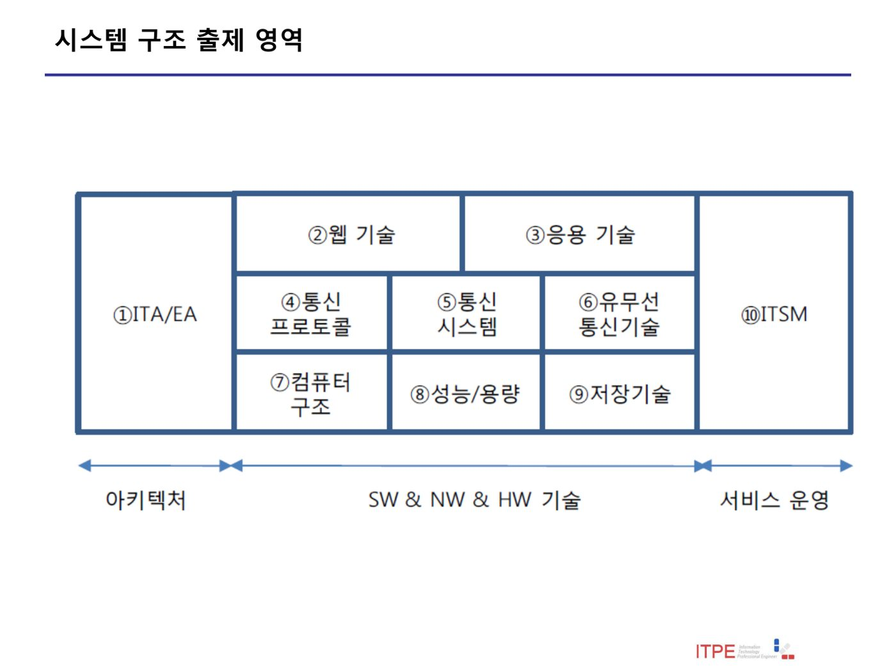
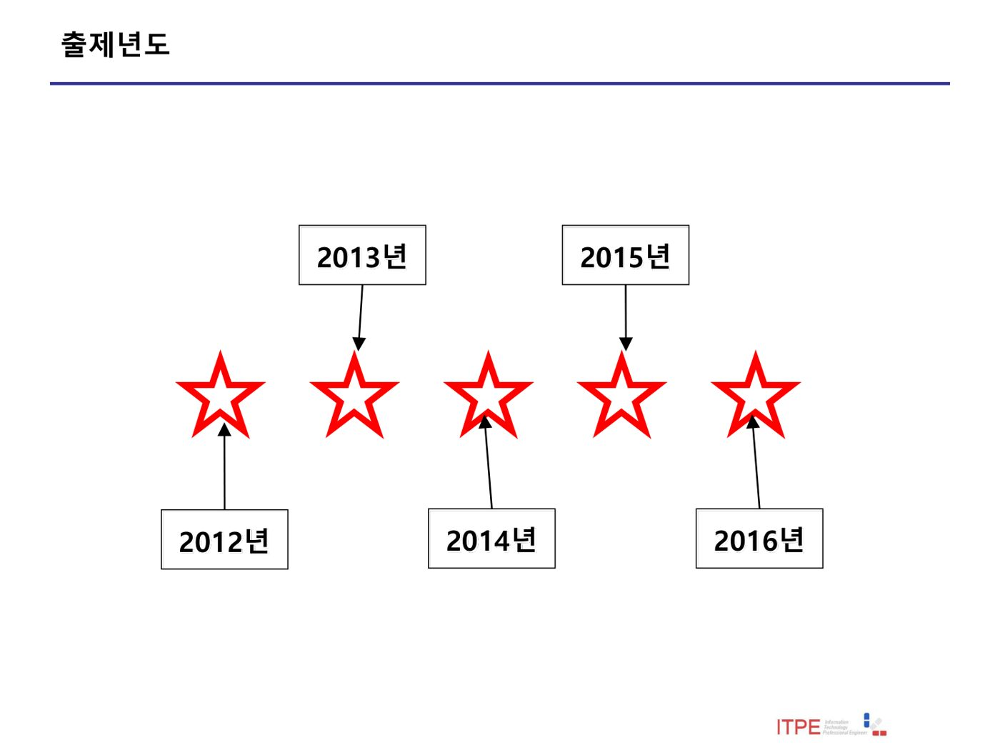
1. ITA/EA(Information Technology Architecture/Enterprise Arc (원본 p.9-11)
▸ 원본 p.9: ITA/EA(Information Technology Architecture/Enterprise Arc
- 비즈니스 업무, 관리 활동, 정보기술 간의 관계를 현재와 향후 추진해 나갈 모습에 대해 명확히 묘사해둔 청사진(2000년, OMB)
- 기업 또는 기관의 업무와 정보, 이를 지원하는 정보기술의 관계를 효율적으로 통합 관리하기 위한 체계
- 기업의 목표와 요구사항을 잘 지원하기 위해 IT 인프라의 각 부분들이 어떻게 구성되고 동작되어야 하는 가를 체계적으로 기술한 문서이자 시스템
2. 도입배경
- 전사적으로 통일된 정보기술 원칙 및 요소별 표준화된 기술기반 구축
- 급변하는 경영변화에 신속하고 유연한 대응할 수 있는 IT 기반 구축
- 정보화 정책 및 투자 결정을 위한 기준 설정
- 정보화 효과 증대를 위한 통합 관리 모델의 구성
- 전사적 EA를 통한 시스템 간의 상호 운용성, 확장성 및 가용성 확보
- 정보기술 자산관 및 능력향상을 위해 IT 부분 투자 및 비용 최적화 ITA/EA
▸ 원본 p.10 표: BAM
| 구분 | 내용 |
|---|---|
| EA Framework | • 기업의 비즈니스, 정보, 어플리케이션 및 기술들에 대하여 명확한 구성요소로 식별, 정의하고, 이들 간의 관계를 정립한 청사진을 구축하기 위한 구조적인 틀 • EA를 개발하기 위한 의사소통 모델 • 특정한 아키텍처를 개발하기 위한 가이드로써, 모델링, 원칙, 서비스, 접근방법, 표준, 디자인 개념 등을 지원하는 모델들의 집합 |
| 기술참조모델 | • TRM, Technical Reference Model • 업무활동에 필요한 정보 서비스를 식별하고 설명한 것 • 개념을 추상화한 플랫폼을 제공하며, 구성 요소 간의 인터페이스를 정의 |
| 표준프로파일 | • SP, Standards Profiles • 기술참조모델에 명시된 서비스를 지원하는 정보기술 표준들의 집합으로 정의 • 표준의 목적을 충족하고 특정 업무 기능에 제공되는 기술을 지원하기 위해서 필요한 최소한의 기준을 수립 |
▸ 원본 p.11 표: BAM
| 구분 | 내용 | 산출물 | 참조모델 |
|---|---|---|---|
| Business Architecture | • 기업의 비즈니스 비전, 목표에 부합되는 비즈니스 모델을 설정하고, 목표를 파악하여 IT 적용 기회 도출 | • 비즈니스 액티비티 • 비즈니스 이벤트 • 비즈니스 역할 및 위치 • 전사적 정보 모델 • CRUD 매트릭스 | BRM |
| Data Architecture | • 업무 기능을 지원하는 전사적 관점의 논리적 데이터 모델과 표준 수립 | • 데이터 흐름 다이어그램 • 데이터 개체 관계도 • 개념적, 논리적, 물리적 모델 | DRM |
| Application Architecture | • 운용, 개발원칙을 제정, 업무 기능과 데이터 관점에서 전사 범위의 논리적 어플리케이션을 구성하며, 어플리케이션 간 연관성을 규정 | • 어플리케이션 기능 모델 • 어플리케이션 프로세스 모델 | ARM |
| Technical Architecture | • 어플리케이션, 데이터가 어떠한 기준에서 어떻게 결합될지를 정보기술 관점에서 정의 | • 운영 모델 • 기술 참조 모델 | TRM + SP(Standard Profile) |
6. Reference Model (원본 p.12-15)
▸ 원본 p.12 표: BAM
| 구분 | 내용 |
|---|---|
| PRM | • 성과 참조모델(Performance Reference Model) • 업무, 정보시스템 등의 최적화 업무 측정에 대한 표준적인 평가척도를 제공 |
| BRM | • 업무 참조 모델(Business Reference Model) • 각 기관들이 독립적으로 추진하기 쉬운 공통된 업무를 식별하여 관련 기관간 협력하도록 하는 기능적으로 기술한 것 |
| DRM | • 데이터 참조 모델(Data Reference Model) • 각 기관간, 기관과 고객간, 기관과 기업 간의 사이에서 정보의 교환과 교류 형태를 식별 |
| SRM | • 서비스 참조 모델(Service Component Reference Model) • 응용 프로그램과 Component, 업무 Service 등을 식별하고 재사용 가능하게 하는 참조모델 |
| TRM | • 기술 참조 모델(Technical Reference Model) • 업무활동에 필요한 정보서비스를 식별하고 설명한 것 • 개념을 추상화한 플랫폼을 제공하며, 구성요소 간의 인터페이스를 정의함 |
▸ 원본 p.13 표: BAM
| 구분 | 분류 | 측정범주 |
|---|---|---|
| 성과 | 미션/업무결과 | • 기관 추구 사업성과 측정(BRM) |
| 고객 | • 고객만족, 서비스 범위, 서비스 품질 | |
| 산출 | 프로세스/활동 | • 재무, 품질, 생산성, 보안, 관리 |
| 투입 | 기술 | • 비용, 품질, 성능, 데이터, 사용 |
| 인적자본 | • 기관 특성에 맞게 설계 | |
| 기타자산 | • 기관 특성에 맞게 설계 |
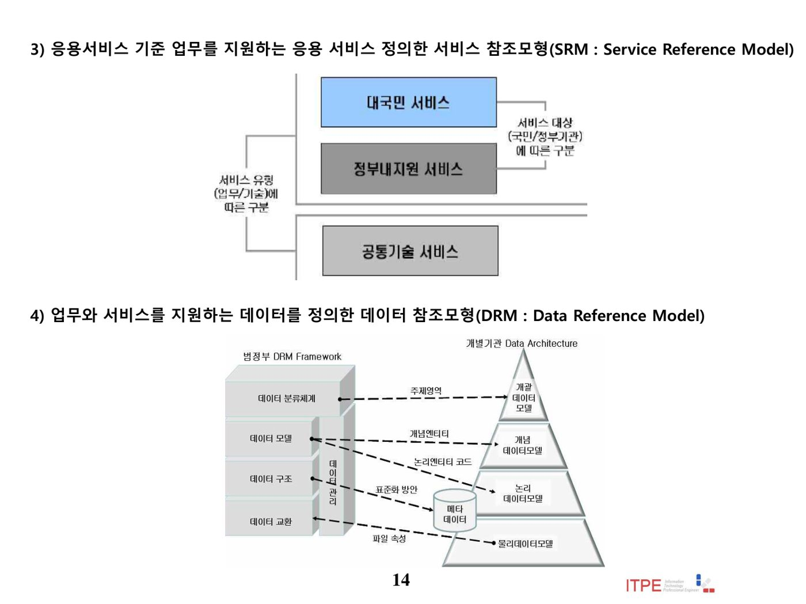
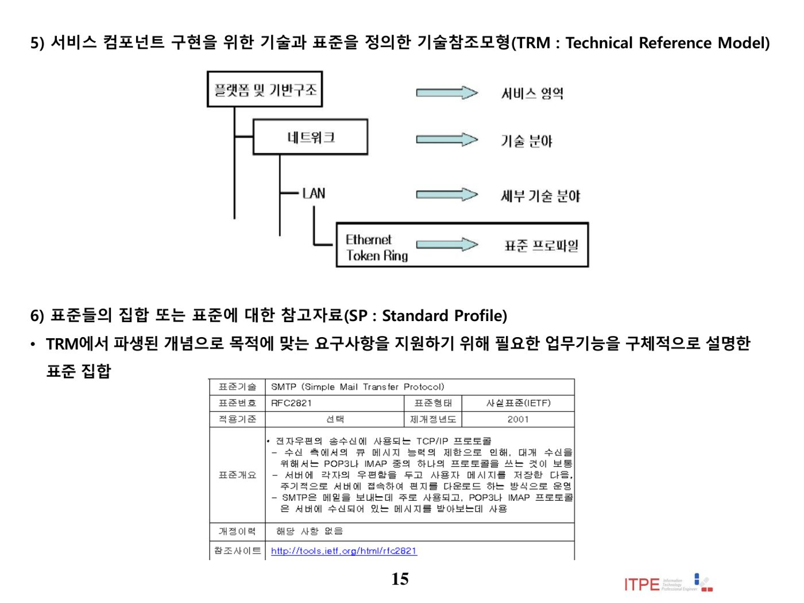
7. 범정부 EA 산출물 메타모델 (원본 p.16-19)
▸ 원본 p.16 표: BAM
| 구분 | 업무 | 응용 | 기술기반 | 보안 | 데이터 |
|---|---|---|---|---|---|
| CEO/CIO | 구성도 및 정의서 | ||||
| 책임자 | 관계도 및 기술서 | ||||
| 설계자 | 설계도 및 설계서 | 논리 데이터 모델 | |||
| 개발자 | 매뉴얼, 목록 | 물리 데이터 모델 |
| 구분 | 1단계 | 2단계 | 3단계 | 4단계 | 5단계 |
|---|---|---|---|---|---|
| 수립 | 도입준비 | 기준수립 | 목표정립 | 통합관리 | 최적화 |
| 관리 | 인식 | 기준수립 | 적용/운영 | 확산 | 최적화 |
| 활용 | 인식 | 기준 | 적용 | 확산 | 최적화 |
▸ 원본 p.17 표: BAM
| 구분 | 내용 |
|---|---|
| 1단계 시작 | • EAP를 위한 작업계획 : 방법론 선택, 팀 구성, 범위, 일정 등 |
| 2단계 현재위치 | • 업무 모델 정의, 현행 시스템 및 기술 분석 |
| 3단계 목표비전 | • 데이터 아키텍처(Data Architecture) 어플리케이션 아키텍처(Application Architecture) 기술 아키텍처(Technology Architecture) |
| 4단계 획득계획 | • 현재 시스템에서 새로운 시스템으로의 이전을 위한 계획 : 일정, 비용, 순서를 정의 |
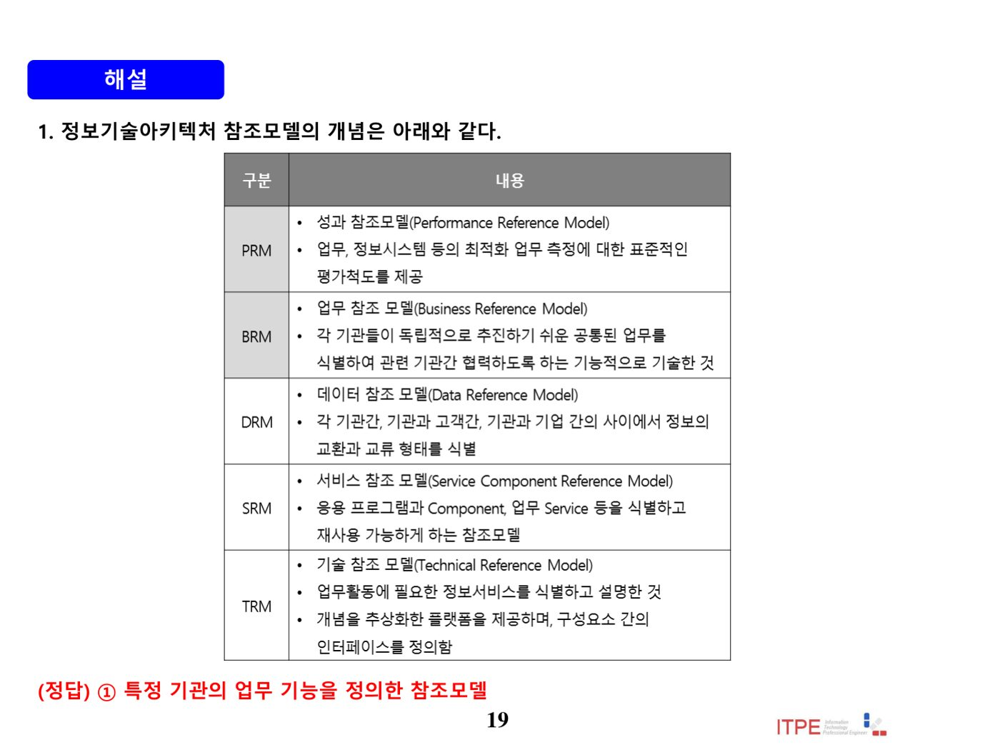
J2SE/J2EE/J2ME (원본 p.21)
Java EE(Java Platform, Enterprise Edition) Architecture의 정의
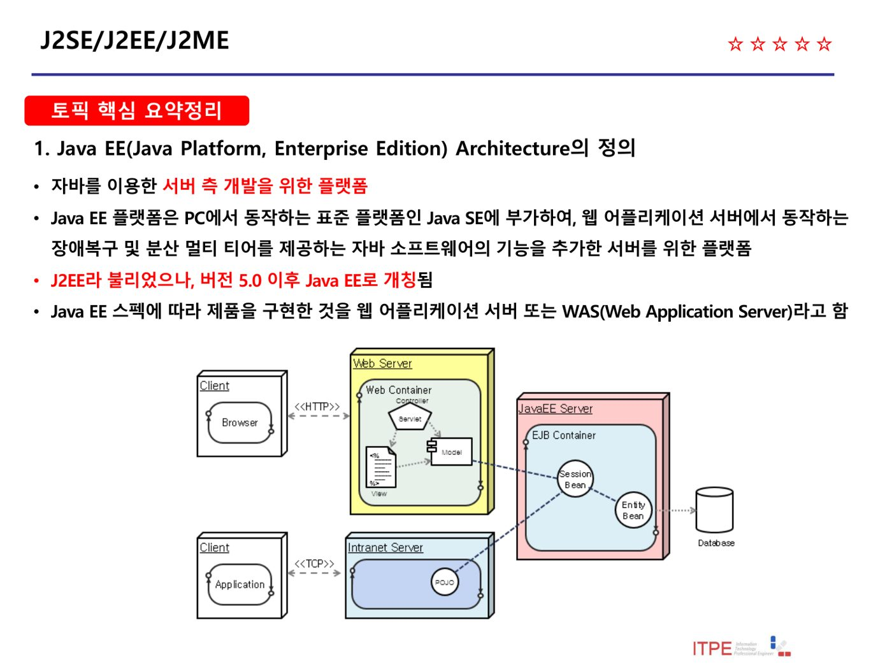
2. J2SE/J2EE/J2ME (원본 p.22)
▸ 원본 p.22 표: J2SE/J2EE/J2ME
| 구분 | 내용 |
|---|---|
| J2SE (Java 2 Standard Edition) | • Java의 개발/실행 환경으로 Java 언어를 이용하여 어플리케이션(Application), 애플릿(Applet) 그리고 컴포넌트(Component) 등을 개발하고 실행할 수 있는 환경을 제공하는 플랫폼 |
| J2EE (Java 2 Enterprise Edition) | • C/S 환경이나 웹 환경의 서버 단에서 수행되는 프로그램을 Java로 구현하고자 할 때 사용되는 자바 기술로 EJB, Servlet, JSP 3가지로 구성되며, WORA(Write Once, Run Anywhere) 이식성, JDBC, CORBA 기술, JNDI, Javamail, JMS, JAF 등으로 구성됨 • 전사적 차원(대규모의 동시 접속과 유지가 가능한 다양한 시스템의 연동 네트워크 기반 총칭)에서 필요로 하는 웹 어플리케이션 관련 기술 등으로 자바개발을 할 수 있는 라이브러리들이 포함 |
| J2ME (Java 2 Micro Edition) | • 컴퓨터 뿐만 아니라 가전제품이나 휴대폰, PDA 등 임베디드 디바이스의 다양하고 제한된 환경에 Java를 탑재하기 위한 기술을 제공 • 휴대폰, PDA, 스마트 카드, 가전제품, 셋톱박스 등의 제한된 용량의 하드웨어에 탑재되는 기술로 KVM이나 Card VM을 사용하여 일반적인 VM을 경량화하여 적용 |
1. 엔터프라이즈 자바빈즈(EJB)의 정의 (원본 p.23)
▸ 원본 p.23 표: EJB(Enterprise JavaBeans)
| 구분 | 내용 |
|---|---|
| 세션빈(Session bean) | • 클라이언트에서 서버의 비즈니스 로직을 요청할 때 이를 처리하는 빈 • 서비스를 요청한 클라이언트와 대화 상태를 유지할 수 있으나, 클라이언트에서 작업을 마치면 세션빈의 자료도 사라지는 비지속적인 빈 |
| 엔티티빈(Entity bean) | • 데이터베이스에 저장된 데이터를 표현하는 빈 • 클라이언트가 요청하는 모든 작업이 데이터베이스의 데이터에 반영 • 서버가 중지되더라도 작업했던 서비스 내용이 지속적으로 유지되는 빈 |
| 메시지 드리븐 빈 (Message-driven bean) | • 세션빈과 자바 메시지 리스너를 구현하고 JMS(Java Messaging Service)메시지를 비동기적으로 전달 받을 수 있도록 지원하는 빈 |
3. 세션 빈(session bean) (원본 p.24-27)
▸ 원본 p.24: BAM
3. 세션 빈(session bean)
- 상태가 없는 무상태(stateless) 세션 빈과 상태가 있는 상태유지(stateful) 세션 빈으로 구분하며 홈 인터페이스(Home Interface), 리모트 인터페이스(Remote Interface), 빈 클래스(Bean Class)로 구성되어 있으며 클라이언트는 로컬 또는 리모트 형태로 개발
- 비즈니스 로직을 포함하고 있고 재사용이 가능한 컴포넌트
- 엔티티 빈과 같이 서로 다른 빈 간의 상호작용
- 데이터베이스에 접근할 때 엔티티 빈을 통하여 접근하고 데이터베이스에는 저장되지 않으며 클라이언트가 종료되면 세션빈도 종료됨 구분 Session bean Entity bean 필드표현
- 일시적 상태
- 영구적인 상태 접근허용
- 단일 클라이언트
- 다중클라이언트 생명주기
- 클라이언트 요청과 빈의 생명주기가 일치함
- DB에 연속적임 키클래스
- 없음
- 1차 키 클래스가 있음 타입
- Stateless(무상태), stateful(상태유지)
- Bmp(Bean managed persistence)
- Cmp(Container managed persistence)
4. Session bean vs. Entity bean
▸ 원본 p.25: 닷넷(.NET )
I. .닷넷(NET)의 정의
- 닷넷 프레임워크(.NET Framework)는 마이크로소프트에서 개발한 윈도우 프로그램 개발 및 실행 환경
- 네트워크 작업, 인터페이스 등의 많은 작업을 캡슐화하였고, 공통 언어 런타임(Common Language Runtime)(CLR)이라는 이름의 가상 머신 위에서 작동
2. .NET 주요 용어 구분 내용 CTS(Common Type System)
- 모든 .NET 언어들이 사용하는 타입 체계 CLS(Common Language Specification)
- .NET 언어들이 지켜야 하는 최소한의 스펙
- 예) 전역함수나 변수는 정의할 수 없음 BCL(Base Class Library)
- 여러 가지 기능을 제공하는 .NET 기본 클래스 라이브러리
- 중간 언어로 인한 속도문제가 있으나, 객체지향언어로 Garbage Collection을 제공하며, 방대한 공유 라이브러리 제공
- IL(Intermediate Language)형태의 언어를 JIT(Just In Time) 컴파일러가 컴파일하여 .NET 환경의 CLR(Common Language Runtime)을 실행시킴
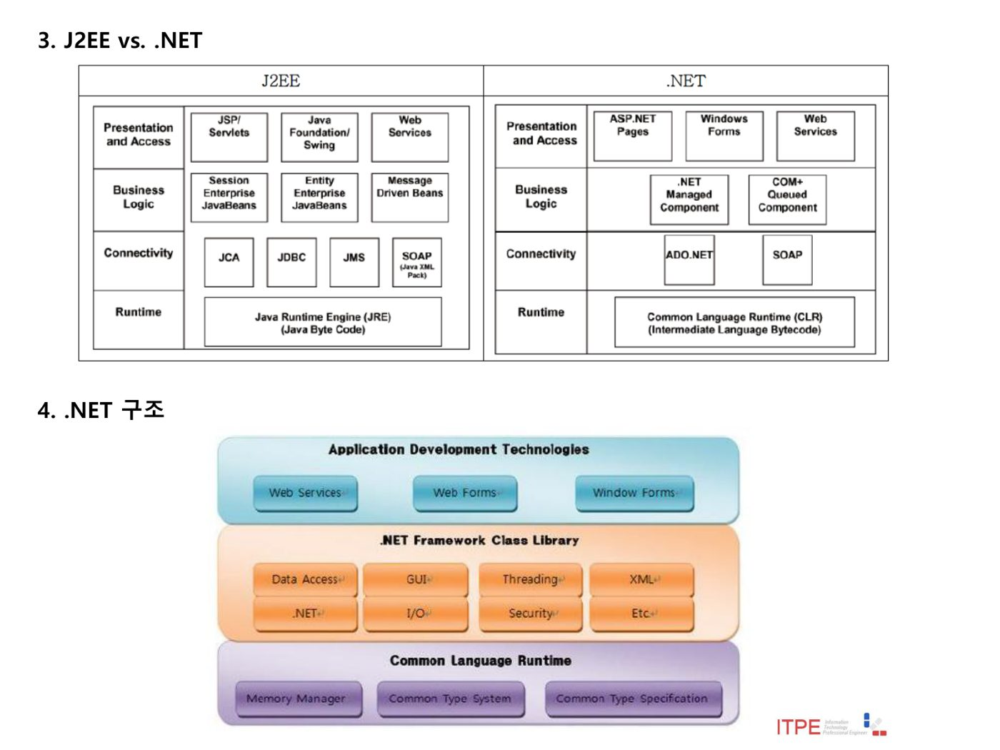
▸ 원본 p.27 표: 스프링 프레임워크(Spring Framework)
| 구분 | 내용 |
|---|---|
| 경량 컨테이너 | • 자바 객체의 생성, 소멸과 같은 라이프 사이클을 관리 |
| POJO(Plain Old Java Object) 방식 프레임워크 | • 일반적인 J2EE 프레임워크에 비해 구현을 위해 특정한 인터페이스를 구현하거나 상속을 받을 필요 없이, 기존 라이브러리 등을 지원 |
| 제어 반전 (IoC, Inversion of Control) | • 제어권이 프레임워크에 있어 필요에 따라 스프링에서 사용자의 코드 호출 |
| 의존성 주입 (DI, Dependency Injection) | • 각각의 계층이나 서비스들 간에 의존성이 존재할 경우 프레임워크가 서로 연결시켜줌 |
| 관점 지향 프로그래밍(AOP, Aspect Object Programming) | • 로깅, 보안과 같이 여러 모듈에서 공통적으로 사용하는 기능을 분리하여 관리 가능 |
3. 스프링 프레임워크 모듈 (원본 p.28-35)
▸ 원본 p.28 표: BAM
| 구분 | 내용 |
|---|---|
| Spring Core | • 프레임워크의 가장 기본적인 부분, 컨테이너 기능을 수행하기 위해 의존성 주입 기능을 제공 |
| Spring Context | • Email, JNDI접근, EJB 연계 등과 같은 다수의 엔터프라이즈 서비스 제공 |
| Spring DAO | • JDBC 추상화 API 제공 |
| Spring AOP | • AOP 구현 API 제공 |
| Spring ORM | • MyBatis, Hibernate, JPA 등 지원 |
| Spring Web | • 웹 기반 기능을 제공 |
| Spring Web MVC | • MVC 구현 API 제공 |
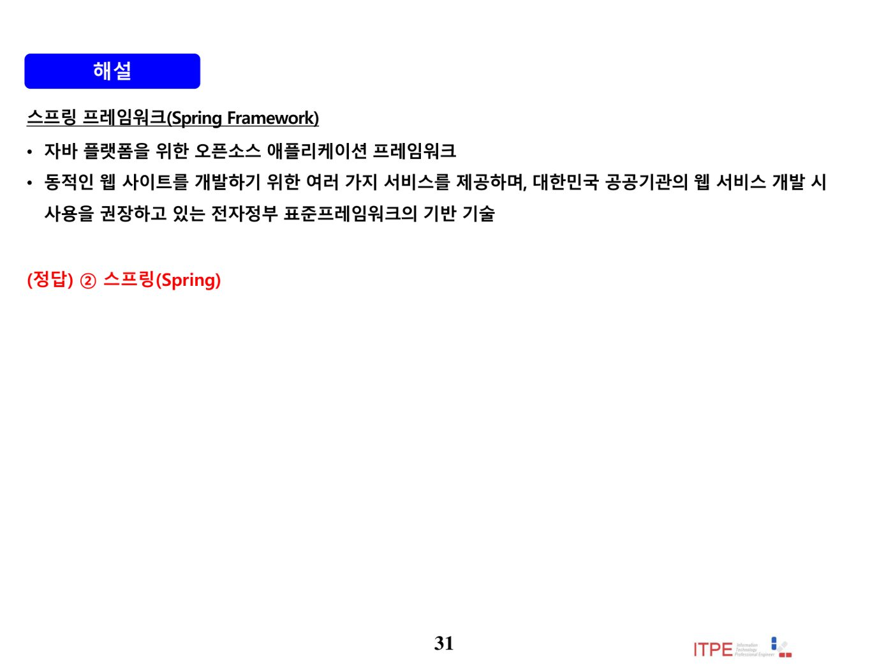
▸ 원본 p.32: 웹 서비스(Web Service)
I. SOA(Service Oriented Architecture)의 정의 • SOA는 소프트웨어를 공유와 재사용이 가능한 ‘서비스‘(혹은 분할된 애플리케이션 조각) 단위로 개발하는 것으로, 기술 중심의 솔루션 보다는 비즈니스 프로세스에 중점을 둔 새로운 소프트웨어 설계방식
2. 웹 서비스(Web Service)의 정의 • XML 기반으로 WSDL(Web Services Description Language), SOAP(Simple Object Access Protocol), UDDI(Universal Description, Discovery, and Integration) 등의 표준 프로토콜에 의해 데이터 교환을 가능하게 해주는 웹 상의 SOA의 구현 아키텍처
▸ 원본 p.33 표: BAM
| 구분 | 내용 |
|---|---|
| BusinessEntity | • 서비스를 제공하는 비즈니스 개체 |
| BusinessService | • BusinessEntity를 서비스로 지정 |
| tModel | • 서비스가 순응해야 하는 기술모델, 레지스트리 엔트리에 대해 계층적 구조 생성 |
| Binding Template | • 서비스 요청자가 서비스로 연결되는 방법 설며 |
| 구분 | 내용 | |
|---|---|---|
| Public UDDI | • 누구든지 웹 서비스를 공표할 수 있는 UDDI • 서비스에 대한 신뢰성 보장이 어려움 | • IBM, Microsoft, SAP, NTT Com 등에서 제공하는 UDDI |
| Semi-private UDDI | • Public UDDP와 Private UDDI의 성격이 절충된 UDDI로서, 여러 가지 형태로 운영될 수 있음 | • 기업포탈 형태, 특정 산업의 마켓 플레이스 등 |
| Private UDDI | • 한정된 구성원 내에서 사용하는 UDDI • 서비스의 종류나 품질에 대한 보증이 용이 | • 기업내부 사용, EAI, 포탈, 마켓 플레이스 UDDI 등 |
▸ 원본 p.34: BAM
5. SOAP(Simple Object Access Protocol)
- 일반적으로 알려진 HTTP, HTTPS, SMTP 등을 사용하여 XML 기반의 메시지를 컴퓨터 네트워크 상에서 교환하는 형태의 프로토콜
- SOAP는 기본적으로 RPC(Remote Procedure Call, 원격 절차 호출)을 위한 XML 마샬링(Marshalling) 메커니즘이며 SOAP은 TCP/IP 소켓이나 JMS 메시지를 통해 RPC로 인코드 되어 사용할 수도 있음
- SOAP envelop = Header + Body
- SOAP Header : 메타 정보 제공
- (라우팅, 인증, 트랜잭션 정보 포함)
- SOAP Body : 처리되어야 할 정보를 포함 ※ XML 문서를 객체(object)로 변환하거나, 객체를 XML로 변환하는 과정이 XML 먀살링(Marshalling) 또는 XML직렬화(Serialization)
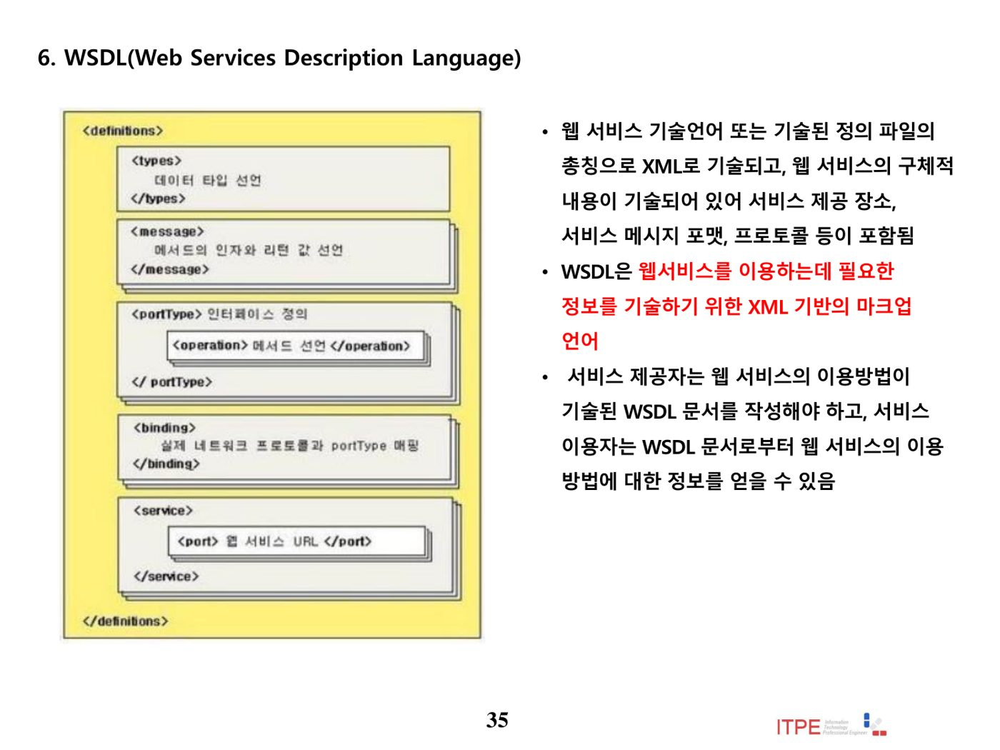
1. 웹의 발전단계 (원본 p.36-41)
▸ 원본 p.36 표: 소셜 웹(Social Web)
| 구분 | 내용 |
|---|---|
| 1세대 웹 | • 웹의 등장과 함께 HTML로 작성된 웹 페이지를 통한 정보공유가 활성화된 시기 • 웹 마스터에 대한 의존성이 컸으며, 변화가 적은 정적인 구조 |
| 2세대 웹 | • 멀티미디어 요소들이 결합되어 웹 페이지의 정보가 다양한 형태로 표현됨 • 데이터베이스에 저장된 데이터를 가공, 동적인 콘텐츠 구성이 가능 |
| 3세대 웹 | • 의미 기반의 정보검색과 에이전트에 의한 자동화된 웹 서비스가 가능한 지능형 웹 |
| 구분 | 웹 2.0 | 웹 1.0 |
|---|---|---|
| 운영방식 | • 분산지향 | • 중앙집중 지향 |
| 정보분류 | • 태깅, 폭소노미 | • 카테고리, 텍사노미 |
| 검색기술 | • 집단지성 기반 검색랭킹 | • 키워드 기반, 디렉토리 기반 |
| 기술특징 | • 동적, 비동기식 방식, 오픈소스 | • 정적, 동기방식, 기술종속 |
| 주요기술 | • XML, Ajax, RSS/ATOM, Open API, Mash-up | • HTML, Active-X |
▸ 원본 p.37: BAM
3. 웹 2.0 특징
① 플랫폼으로서의 웹(The Web as Platform)
- 웹은 OS화되어 직접 서비스하지 않고 플랫폼으로서 웹 어플리케이션을 지원
- 웹 기반에서 Blog, RSS와 같은 개인화 서비스 제공
② 집단 지성의 결집(Harnessing Collective Intelligence)
- 모든 웹 사용자의 집단 행동의 결과로 웹 연결은 유기적으로 성장
- 사용자들이 개별적으로 가지고 있는 사진, 북마크, 지식 등의 콘텐츠들을 공유할 수 있는 공간 형성 및 서비스 제공
- 유저의 공헌이 가져오는 네트워크 효과는 웹 2.0 시대 핵심
③ 데이터가 차세대의 인텔 인사이드(Data is the Next Intel Inside) • 데이터베이스 관리는 웹 2.0 시대의 핵심 경쟁력, 차별화되고 활용성 높은 데이터의 확보로 시장의 우위획득
④ 소프트웨어 발표 주기의 종말(End of the Software Release Cycle)
- 인터넷 시대 소프트웨어의 특징은 제품이 아니라 서비스
- 신속한 수정을 위해 스크립트 언어들이 중요한 역할을 수행
- 사용자들을 공동의 개발자로 취급, 실시간적인 업데이트 실시
⑤ 가벼운 프로그래밍 모델(Lightweight Programming Models)
- REST 형태의 웹 서비스를 사용하거나 Ajax를 이용한 단순한 인터페이스 채용 등
- 배포를 생각한 가볍고 개조/재조합 가능한 프로그래밍 모델 설계
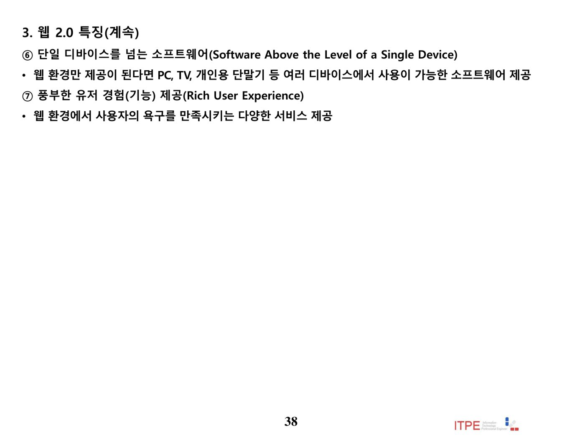
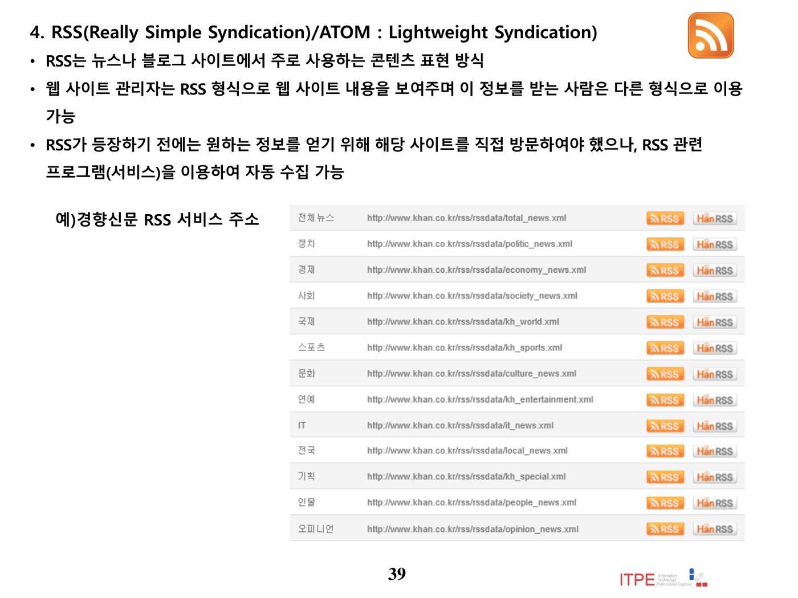
▸ 원본 p.40 표: BAM
| 특징 | 내용 |
|---|---|
| Statelessness | • 이전, 이후에 대한 직접적인 정보가 필요 없이 직관적인 오브젝트 접근으로 서비스 처리 • 세션정보 보관 불필요, 서비스 자유도 높고 유연한 아키텍처 적용 가능(쿠키/세션 불필요) |
| URI이용 | • 모든 유일한 오브젝트에 대해 유일하고 직관적인 URI을 통해 접근 가능 예) 인터넷 메일 확인시 특정 메일을 특정 주소로 접근할 수 있으면 REST 서비스가 적용된 것 |
| HTTP 메소드 이용 | • HTTP에서 제공하는 GET, PUT, POST, DELETE 4개의 메소드를 이용해서 서비스 제공 |
| 구성요소 | 내용 |
|---|---|
| Resource | • 일반적으로 resource는 명사형 단어들이며, http에서 resource 구별하기 위한 ID로 URI를 사용 |
| Method | • GET, DELETE 등과 같이 Resource를 조작할 수 있는 동사형 단어 |
| Representation of Resource | • 클라이언트가 서버로 요청을 보냈을 때, 서버가 응답으로 보내주는 Resource의 상태 |
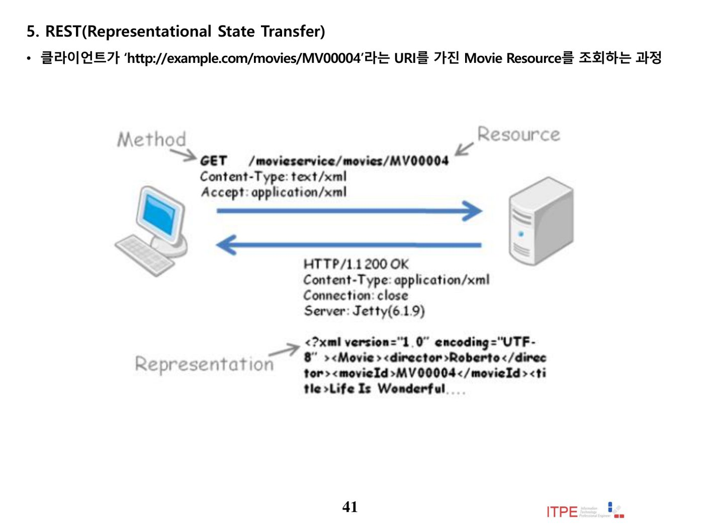
6. Open API & Mashup (원본 p.42)
▸ 원본 p.42 표: BAM
| 구분 | 내용 |
|---|---|
| Open API | • 자사의 API를 외부에 공개한 것으로 일반적으로 웹 서비스(web service) 형태로 공개한 것 • 응용 프로그램에서 사용할 수 있도록 운영체제나 프로그래밍 언어가 제공하는 기능을 제어할 수 있도록 만든 인터페이스(위키피디아) • 원래는 운영체제나 언어가 제공하는 기능을 제어할 수 있는 인터페이스였으나, 웹 서비스에서는 특정 서비스를 이용할 수 있는 인터페이스를 API라 지칭, 이것을 외부에서 사용할 수 있도록 공개한 것이 오픈 API임 |
| Mashup | • 인터넷 상에서 제공되고 있는 다양한 서로 다른 서비스와 기능을 합쳐서 새로운 서비스 또는 응용으로 만들어 내는 것 • 서로 다른 오픈 API를 이용해 시너지를 낼 수 있는 새로운 서비스를 만드는 행위 • 기존 인터넷 서비스의 개방 소스를 조합해 새로운 서비스를 만드는 기법으로 개방과 공유를 전제로 하는 웹 2.0의 핵심기술 예) • 구글지도 + 부동산 정보 = http://www.housingmaps.com • 구글지도 + 토론토 교통정보 = http://Toronto.ibegin.com/traffic/ • 구글지도 + 술집정보 = http://www.beerhunter.ca/ |
7. Social Network Service (원본 p.43-44)
▸ 원본 p.43 표: BAM
| 구분 | 내용 |
|---|---|
| 개념 | • 사회적 관계 개념을 인터넷 공간으로 가져온 것으로 사람과 사람간, 콘텐츠와 콘텐츠 간의 관계 맺기를 통해 네트워크(커뮤니케이션을 통해) 형상을 지원하는 서비스 |
| 구성요소 | ① Identity – 자기 자신의 Identity를 형상화 할 수 있어야 함 a way of uniquely identifying people in the system ② Presence – 자신이 누구인지(내 상태와 현황) 알릴 수 있는 방법이 있어야 함 a way of knowing who is online, available or otherwise nearby – Twitter, LBS ③ Relationships – 둘 이상의 관계와 친밀도가 형성 될 수 있어야 함 a way of describing how two users in the system are related ④ Conversations – 다른 사람들과 커뮤니케이션을 할 수 있어야 함 a way of talking to other people through the system ⑤ Groups – 공통 관심사를 가진 사람들이 모일 수 있는 장이 마련되어야 함 a way of forming communities of interest ⑥ Reputation - Identity의 평가 가치(Self Branding 등)를 제공하여야 함 a way of knowing the status of other people in the system ⑦ Sharing – 콘텐츠와 정보를 공유하는 채널이 제공되어야 함 a way of sharing things that are meaningful to participants |
▸ 원본 p.44: 시맨틱 웹(Semantic Web)
I. 시맨틱 웹(Semantic Web)의 정의
- ‘의미론적인 웹＇이라는 뜻으로, 현재의 인터넷과 같은 분산환경에서 리소스(웹 문서, 각종 파일, 서비스 등)에 대한 정보와 자원 사이의 관계-의미 정보(semanteme)를 기계(컴퓨터)가 처리할 수 있는 온톨로지 형태로 표현하고, 이를 자동화된 기계(컴퓨터)가 처리하도록 하는 프레임워크 또는 기술
- 웹의 창시자 팀 버너스 리가 1998년 제안했고, 현재 W3C에 의해 표준화
- 시맨틱 웹은 다국어 문자 처리를 위하여 유니코드(Unicode)를 기반으로 하며 주소체계의 일종인 URI(Uniform Resource Identifier)를 사용하여 메타데이터로 기술될 정보 자원들을 정의하고 식별
- 메타데이터들은 XML(eXtensible Markup Language) 구문에 기반한 RDF(Resource Description Framework) 트리플 형식으로 표현되며, RDFS(RDF Schema)와 온톨로지(ontology)는 RDF 트리플 생성 시에 필요한 클래스(class)와 속성(property)을 정의하고 계층 관계를 설정
2. 시맨틱 웹 계층구조
3. 시맨틱 웹의 기술 계층 구조 (원본 p.45)
▸ 원본 p.45 표: BAM
| 구분 | 내용 |
|---|---|
| URI(Uniform Resource Identifier) | • 웹 상의 자원을 식별하기 위한 객체의 명칭, 위치 등의 표현 |
| XML(eXtensible Markup Language) | • 메타 정보 표현 언어 • XML 상에서의 동일한 요소나 속성을 구분하기 위해 쓰이는 이름인 Namespace, XML 문서의 마크업 방식에 대한 정의인 XML Schema 등과 같은 다양한 표준 |
| RDF(Resource Description Framework) | • RDF는 정보 자원이나 자원의 구조를 표현하는 언어 |
| RDFS | • RDF의 Schema 정보, 경량 온톨로지 |
| SPARQL | • RDF 질의를 위한 언어 |
| RIF(Rule Interchange Format) | • 규칙의 정의와 교환을 위한 계층 |
| OWL | • 특정 도메인에 대한 공유되는 일반적인 이해와 개념 • 개념과의 관계를 표현하기 위한 언어 |
| Logic | • 기존에 정의된 정보들을 바탕으로 새로운 결론을 도출하는 추론 기능 등 |
| 증거/신뢰(Proof/Trust) | • 웹의 정보에 대한 신뢰 |
5. XML Schema (원본 p.47)
▸ 원본 p.47 표: BAM
| 비교항목 | DTD | XML 시키마 |
|---|---|---|
| 문법 | • SGML(Standard Generalized Markup Language), EBNF(Extended Backus-Naur Form)문법 준수 | • XML 문법 준수 |
| 네임스페이스 지원 | • 지원하지 않음 | • 지원함 |
| 지원 데이터 형식 | • 단순한 텍스트 데이터 형식 지원 | • 다양한 빌트인 데이터 형식과 사용자 지정 데이터 형식을 지원 |
| 반복 연산자 지원 | • 0회, 1회, n회 반복 지원 | • 최소 반복 횟수와 최대 반복 횟수를 다양하게 지정 가능 |
| 표준화 단계 | • W3C 표준(1999년) | • W3C 표준(2001년) |
6. OWL(Web Ontology Language) (원본 p.48)
▸ 원본 p.48: BAM
6. OWL(Web Ontology Language)
- Triple(주어-술어-목적어) 개념 및 모든 자원과 속성을 대상으로 한 URI 부가 기능
- 자원의 속성 및 자원들 간의 관계 기술에 적합한 RDF는 속성(properties)과 클래스(classes)의 명확한 정의, 클래스와 클래스간의 관계, 속성과 속성 간의 관계를 규정하는 방법은 미제공
- 동의요소, 역관계, union, intersection 등의 주요 관계를 지원하지 못하는 RDF와 RDF 스키마의 모델링 요소를 확장, 강화할 필요가 있었고 DAML+OIL이 개발되었고 class와 property의 개념 및 그들 사이의 관계가 보다 명료하게 정의되도록 정리한 온톨리지 언어가 OWL임 OWL 온톨로지 구성요소
- 클래스 간의 텍사노미 관계
- 데이터의 속성, 즉 클래스의 요소인 속성값에 관한 기술
- 객체의 속성, 즉 클래스 요소 간의 관계 기술
- 클래스들의 인스턴스, 속성들의 인스턴스
- 사람에게 정보를 표시하는데 그치지 않고 정보의 내용을 직접 처리할 수 있는 어플리케이션을 구현하는데 활용될 수 있도록 설계된 언어
- 문서에 포함된 정보를 어플리케이션을 이용하여 자동으로 처리하고자 할 때 활용하는 언어
- OWL을 이용하면 임의의 어휘를 구성하는 용어(term)의 의미와 용어들 간의 관계를 명시적으로 표현 가능하며, 이와 같이 용어와 용어들 간의 관계를 표현한 것을 온톨로지(ontology)라고 함
7. OWL 하위 언어 (원본 p.49)
▸ 원본 p.49 표: BAM
| 구분 | 내용 |
|---|---|
| OWL Full | • 매우 높은 수준의 이상적 표현, 그러나 적용은 어려움 • All syntactic freedom of RDF • owl:cardinality, use a class as a member of another class, metaclasses. 사용이 가능함 |
| OWL DL | • DL(Description Logic) 기반 언어 • owl:cardinality, use a class as a member of another class, metaclasses. 사용은 불가능함 |
| OWL Lite | • owl:minCardinality, owl:maxCardinality.는 사용 불가, owl:cardinality은 0과 1만 사용 가능 • Cannot use owl:hasValue. Cannot use owl:disjointWith. • Cannot use owl:oneOf. Cannot use owl:complementOf. Cannot use owl:unionOf. |
1. Ajax의 정의 (원본 p.50)
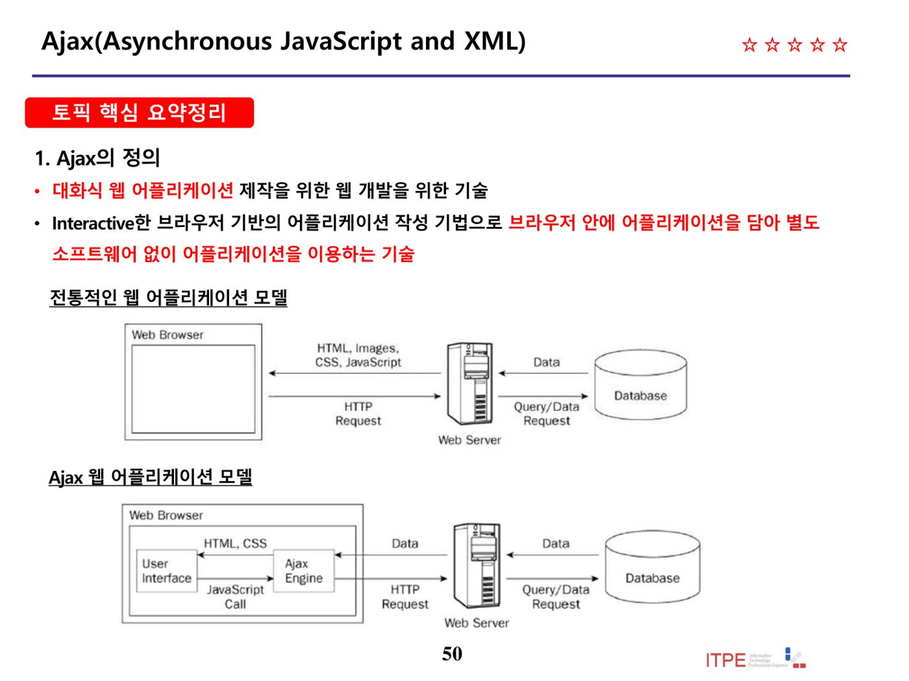
2. Ajax의 동작비교 (원본 p.51)
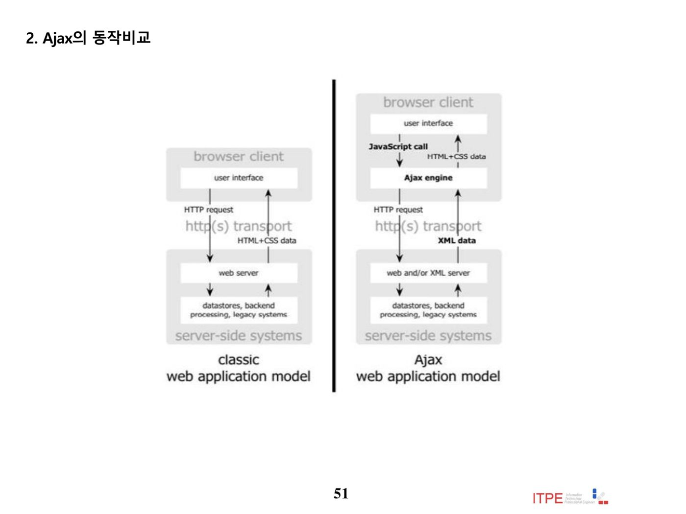
1. 분산객체 기술의 정의 (원본 p.54)
▸ 원본 p.54 표: 분산객체 기술(Distributed Object Technology)
| 구분 | 내용 |
|---|---|
| DCOM/COM+ | • COM은 윈도우 계열의 동일 컴퓨터 내에서 사용될 수 있도록 클라이언트와 서버의 인터페이스 집합 • DCOM은 네트워크 상에서 클라이언트 프로그램 객체가 다른 컴퓨터에 있는 서버 프로그램 객체에 서비스를 요청할 수 있도록 해주는 마이크로소프트 모델 |
| Java RMI | • RMI 내부에서는 객체 직렬화(Serialization) 기법을 이용하여 매개변수로 넘겨 줄 객체를 직렬화한 후 메소드 호출할 때 함께 전송 |
| CORBA(Common Object Request Broker Architecture) | • 어플리케이션들끼리 어느 위치든, 누가 만들었든 상관없이 상호간 통신을 보장하고 분산 객체 간의 상호운용을 위한 통신 미들웨어 역할 • 분산 객체 소프트웨어의 기본 틀로서 서비스를 제공하는 부분과 제공 받는 부분간의 투명한 정보 교환이 가능 |
3. RPC(Remote Procedure Call) (원본 p.55)
▸ 원본 p.55 표: BAM
| 구분 | RMI | DCOM | CORBA |
|---|---|---|---|
| 개발 | SUN | MS | OMG |
| 통신 | RMI-IIOP | RPC-기반 | IIOP |
| 언어 | JAVA 기반 | C++ 외 다양 | JAVA 포함(CORBA 3.0) |
| 자동화 | RMIC | 취약 | RMIC와 유사 |
1. 그리드 컴퓨팅(Grid Computing)의 정의 (원본 p.56)
▸ 원본 p.56 표: 그리드 컴퓨팅(Grid Computing)
| 구분 | 내용 |
|---|---|
| 컴퓨팅 그리드 (Computational Grid) | • 복잡한 연산을 수행하기 위해 CPU 훔치기(CPU scavenging/stealing)에 초점 |
| 데이터 그리드 (Data Grid) | • 대용량의 분산 데이터를 공유 관리하는 것 |
| 액세스 그리드 (Access Grid) | • 지리적으로 떨어진 곳에 있는 사용자들 간에 오디오와 비디오를 사용하여 업무 협력을 가능하게 하는 것 |
| 장비 그리드 (Equipment Grid) | • 주요 장비를 원격 조정하며 장비로부터 얻은 데이터를 분석하는 것 |
3. 그리드 컴퓨팅 프로토콜 구조 (원본 p.57-59)
▸ 원본 p.57 표: 그리드 컴퓨팅 프로토콜 구조
| 계층 | 내용 |
|---|---|
| Fabric Layer | • 스토리지 시스템, 네트워크 자원, 연산 자원, 개발 IT 자원, 분산 컴퓨터 Pool 등의 IT 자원 집합 |
| Connectivity Layer | • 그리드에서 일어나는 네트워크 트랜잭션에 필요한 핵심적인 프로토콜과 인증 프로토콜의 접속 계층(SSO, Delegation(위임)) |
| Resource Layer | • 기반 계층에 있는 개발 IT 자원 공유에 대한 협상, 가입, 모니터링, 통제 등을 위한 자원 계층 |
| Collective Layer | • IT 자원들 집합에서 일어나는 상호작용을 관리하는 프로토콜, 서비스 프로그램, Application Interface Program(API) 등의 집합 계층 |
| Application Layer | • 응용 계층, 가상 조직 환경 안에서 운영되는 사용자 어플리케이션들을 지칭 |
▸ 원본 p.58 표: 웹 개발 언어(Web Development Language)
| 구분 | 내용 |
|---|---|
| DHTML (Dynamic HTML) | • 정적 마크업 언어인 HTML과 클라이언트 기반 스크립트 언어, 스타일 정의 언어인 CSS를 조합하여 대화형 웹 사이트를 제작하는 기법 • 간편한 네비게이션을 위해 대화형 폼(form)을 제작하거나, 전자 학습에 사용되는 대화형 실습장을 만드는데 이용 |
| XHTML | • Extensible Hypertext Markup Language • HTML과 동등한 표현 능력을 지닌 마크업 언어로, HTML 보다 엄격한 문법 • HTML이 SGML의 응용인데 비해, XHTML은 SGML의 제한된 부분집합인 XML의 응용 |
| HTML5 | • HTML 4.01, XHTML 1.0, DOM Level 2 HTML에 대한 차기 표준 제안 |
| Java | • 처음에는 가전제품 내에 탑재해 동작하는 프로그램을 위해 개발했지만, 웹 어플리케이션 개발에 가장 많이 사용하는 언어, 모바일 기기용 소프트웨어 개발에도 많이 사용됨 • 다른 컴파일 언어와 구분 짓는 가장 큰 특징은 컴파일된 코드가 플랫폼 독립적임 • 자바 어플리케이션은 JVM(Java Virtual Machine) 상에서 동작하며, JVM이 동작하는데 메모리 구조와 GC(Garbage Collection)는 어플리케이션 응답과 성능과 밀접 |
| Java Script | • 객체 기반의 스크립트 프로그래밍 언어 |
▸ 원본 p.59 표: 구분
| 구분 | 내용 |
|---|---|
| JSP | • Server에서 명령을 수행하여 결과 값 만을 클라이언트 쪽에 보내주는 Script Language |
| Servlet | • Server Side Applet의 약자로 자바 서블릿(Java Servlet)은 자바를 사용하여 웹 페이지를 동적으로 생성하는 서버측 프로그램 |
| Applet | • Java 언어로 구성된 간단한 기능의 소규모 프로그램 또는 웹 페이지에 포함되어 작은 기능을 수행하는 프로그램 |
| Ajax | • Ajax(Asynchronous JavaScript and XML)는 대화식 웹 애플리케이션의 제작을 위한 웹 개발 기법 |
| SGML | • SGML(Standard Generalized Markup Language)는 1986년 국제표준(ISO 8879) 언어로 채택(다른 언어를 만들 수 있는 언어) |
| HTML | • HTML(Hyper Text Markup Language)는 1990년 등장한 단순하고 사용이 용이한 웹 문서의 사실상 표준 언어 |
2. Java Garbage Collection 방식 (원본 p.60-63)
▸ 원본 p.60 표: Java Garbage Collection 방식
| 방식 | 내용 |
|---|---|
| Default GC | • JDK에서 기본적으로 사용되는 Garbage Collection 방식으로 Mark & Compact 알고리즘을 기반으로 수행 |
| Incremental GC | • JDK 1.3 버전부터 지원되는 방식으로 Full GC의 수행 횟수를 줄이기 위해 이전 영역의 GC를 나눠서 수행하는 방식 |
| Concurrent GC | • 1.4버전부터 지원되는 Garbage Collection • 수행시 응용시스템 수행이 중지되는 Full GC 방식을 개선하여 응용시스템의 유휴시간에 Garbage Collection을 수행하는 방식 |
| Parallel GC | • 1.4버전 이전의 기존의 단일 쓰레드 방식의 Garbage Collection이 아닌, 멀티 쓰레드 방식으로 Garbage Collection 수행 • Low Pause 옵션 : GC를 빨리 수행하는 것보다는 응용시스템 중지를 최소화 하는 방식 • Throughput 옵션 : 가능한 빨리 GC를 수행하는 옵션 |
| 방식 | 내용 |
|---|---|
| Default GC | • JDK에서 기본적으로 사용되는 Garbage Collection 방식으로 Mark & Compact 알고리즘을 기반으로 수행 |
| Incremental GC | • JDK 1.3 버전부터 지원되는 방식으로 Full GC의 수행 횟수를 줄이기 위해 이전 영역의 GC를 나눠서 수행하는 방식 |
| Concurrent GC | • 1.4버전부터 지원되는 Garbage Collection • 수행시 응용시스템 수행이 중지되는 Full GC 방식을 개선하여 응용시스템의 유휴시간에 Garbage Collection을 수행하는 방식 |
| Parallel GC | • 1.4버전 이전의 기존의 단일 쓰레드 방식의 Garbage Collection이 아닌, 멀티 쓰레드 방식으로 Garbage Collection 수행 • Low Pause 옵션 : GC를 빨리 수행하는 것보다는 응용시스템 중지를 최소화 하는 방식 • Throughput 옵션 : 가능한 빨리 GC를 수행하는 옵션 |
▸ 원본 p.63 표: XML(eXtensible Markup Language)
| 구분 | 내용 |
|---|---|
| XML(eXtensible Markup Language) | • SGML의 실용적인 기능만을 모은 subset으로 인터넷 상에서 광범위하게 사용될 차세대 Markup Language |
| XSLT(eXtensible Stylesheet Language Transformation) | • XML 문서를 다른 XML 문서로 변환하는데 사용하는 XML 기반 언어 • W3C에서 제정한 표준으로 XML 변환 언어를 사용하여 XML 문서로 바꿔주며, 탐색하기 위해 Xpath를 사용 |
| XLL(eXtensible Linking Language) | • XML 문서간 연결을 가능케 하는 강력한 링크 기능 수행 언어 |
| XPath | • 확장 생성 언어 문서의 구조를 통해 경로 위에 지정한 구문을 사용하여 항목을 배치하고 처리하는 방법을 기술하는 언어 |
| XQuery | • 질의어의 규격으로서 XML 데이터 모음을 질의하기 위해 고안 |
3. XML Schema와 DTD 비교 (원본 p.64-66)
▸ 원본 p.64 표: XML Schema와 DTD 비교
| 구분 | XML Schema | DTD |
|---|---|---|
| 작성문법 | • XML 1.0 만족 | • EBNT+의사(pseudo) |
| 구조 | • 복잡함 | • 간결함 |
| Name Space 지원 | • 지원함(문서 내 다수 가능) | • 지원하지 않음(문서 내 단일) |
| DOM 지원 | • XML 이므로 DOM 이용 가능 | • 못함 |
| 동적 스키마 지원 | • 가능(런타임시 선택, 상호작용의 결과로 변경될 수 있음) | • 불가능(DTD는 실제로 읽기만 가능) |
| 데이터형 | • 확장적인 데이터형 | • 매우 제한적인 데이터형 |
| 확장성 | • 완전히 객체지향적인 확장성 | • 문자열 치환을 통해 확장됨 |
| 개방성 | • 개방적, 폐쇄적 수정 가능한 컨텐츠 모델 | • 폐쇄적 구조 |
▸ 원본 p.65 표: XML 파싱 방법, DOM과 SAX 비교
| 구분 | HTML LINK | XLINK |
|---|---|---|
| 방향성 | • 단방향 | • 단방향과 양방향 링크 모두 가능 |
| 위치 지정 링크 | • 단락 구분의 문서 세부 위치 지정 | • 문자 단위의 세밀한 문서 위치 지정 |
| 링크 문서화 | • 링크 정보만 별도로 저장관리 불가능 | • 링크 정보만 별도 문서로 관리 가능 |
| 링크 의미 부여 | • 링크 의미 부여 불가능 | • 링크에 의미 부여 가능 |
| 구분 | DOM | SAX |
|---|---|---|
| 접근방법 | • 트리기반 | • 이벤트 기반 |
| 장점 | • 빈번한 수정, 저장가능 • 여러 응용프로그램에서 동시 사용 | • 메모리 효율적 사용 • 사용이 쉽고 속도가 빠름 |
| 단점 | • 메모리 및 리소스 사용 많음 • 속도가 느림 | • 구조적 접근이 어려움 • 수정 저장이 불가능 |
| 적용분야 | • 구조적 접근이 필요할 때 • 여러 응용프로그램에서 한 XML 공유 사용 가능 | • 문서의 일부분만 읽을 경우 • 유효성 처리 데이터 변환 |
▸ 원본 p.66 표: 통합기술(Unified Technique)
| 구분 | Point to Point | Hub & Spoke | Bus |
|---|---|---|---|
| 내용 | • 긴밀하게 연결된 어플리케이션이 적을 경우 | • 긴밀히 연결된 어플리케이션이 많은 경우 | |
| 라우팅 룰 | • 어플리케이션 간의 라우팅이 정적인 경우 | • 어플리케이션간의 라우팅이 동적인 경우 | • 어플리케이션 간의 라우팅이 정적이 되어 복잡하지 않은 경우 |
| 확장성 | 낮음 | 높음 | |
| 관리 | • 분산방식관리 • 한 어플리케이션 변경 사항이 다른 어플리케이션들의 변경을 초래하는 효과 발생 • 관리의 어려움 | • 처리 컴포넌트로 구성된 허브 • 한 어플리케이션 변경사항이 다른 어플리케이션들의 변경을 초래하는 효과 없음 • 중앙집중식으로 관리 | • 분산관리 방식 |
3. EAI 통합관점에 따른 분류 (원본 p.67)
▸ 원본 p.67 표: EAI 통합관점에 따른 분류
| 구분 | EAI |
|---|---|
| 데이터 중심 통합 | • 데이터 소스의 변환을 통해 통합이 이루어지는 형태로 어플리케이션 간의 통합은 이루어지지 않고, 통합된 메타 데이터를 통해 통합됨 • 자동적인 변환보다는 데이터의 수동적 변환에 의존하여 통합을 진행하는 방식 • XML 기술을 중심으로 한 데이터 통합방식이 주로 사용됨 |
| 메시지 중심 통합 | • 어플리케이션 명령어들의 상호 변환을 통한 통합방식 • 어플리케이션은 이들 미들웨어에 의해 상호 연동됨 |
| 액세스 중심 통합 | • 외부 시스템의 데이터나 인터페이스를 하나 또는 그 이상의 기존 시스템과 통합하는 방식으로 e비즈니스를 위한 기업 상호간 연동에 많이 사용됨 • 기업들은 상호간의 어플리케이션을 연동할 필요가 없이 통합 서버를 통해 포탈이나 외부 인터페이스와 연동되고 이는 전체 어플리케이션들의 작동에 통합적으로 영향을 미치는 방식을 취함 |
4. ESB(Enterprise Service Bus) (원본 p.68-73)
▸ 원본 p.68 표: ESB(Enterprise Service Bus)
| 구분 | EAI | ESB |
|---|---|---|
| 통합종류 | • 어플리케이션 통합 | • 서비스 통합, 서비스 호스팅 |
| 통합방안 | • 시스템별 어댑터 사용으로 복잡성 증가 | • 표준기술 사용한 단순 통합 |
| 표준 | • 벤더별 전송기술 상이 | • 개방형 표준(웹서비스) |
| 통합형태 | • 정적결함(static, 1:1 결합) | • 느슨한 결합(Dynamic, 1:N 결합) |
| 비용 | • 통합대상 시스템별 어댑터 구입 또는 개발로 지속적 비용 발생 | • 동일 표준기반으로 추가 개발비용 절감 • 비즈니스 로직 재상용을 통합 비용절감 |
| 구현 아키텍처 | • 집중형(Hub & Spoke) | • 분산형(Distribute) |
▸ 원본 p.69: ETL(Extraction, Transformation, Loading, ETT와 동의어)
• 다양한 소스시스템(Source System)으로부터 필요한 데이터를 추출(Extract)하여 변환(Transformation) 작업을 거쳐 타겟 시스템(Target System)으로 전송 및 로딩(Loading)하는 모든 과정(데이터웨어하우스 구축에 사용되는 데몬 프로그램)
7. EII(Enterprise Information Integration)
- 물리적 통합 없이 다양한 어플리케이션이 다양한 데이터를 자유로이 조회하고 접근할 수 있는 가상의 데이터 통합기술
- 단순한 하나의 기술이 아닌 “기업의 데이터가 비즈니스 니즈를 가장 잘 충족시킬 수 있도록 통합된 상태＂를 달성하기 위한 목적이라고 규정(Gartner)
▸ 원본 p.70 표: 구분
| 구분 | EII | ETL |
|---|---|---|
| 주요기능 | • 분산된 데이터들의 실시간 통합 • 어플리케이션들의 표준화된 데이터 접근과 변환기능 제공 | • 대량의 데이터 변환/적재 • DW/DM의 분석 기반 데이터를 추출/정제 |
| 통합방법 | • 메타데이터에 기반한 변환/통합 | • 데이터 클린징 |
| 데이터 이동 | • 물리적인 데이터의 이동 없이 가상화 | • 대용량의 데이터 이동 |
| 데이터 유형 | • 정형/비정형 데이터 | • 구조화된 정형 데이터 |
| 데이터 접근 | • 실시간 데이터 접근 | • 배치 방식 데이터 접근 |
| 데이터 관리 | • 원본 데이터의 일부 업데이트 가능 | • 원본 데이터의 읽기만 가능한 단방향 |
| 장점 | • 분산 데이터를 단일 데이터 서버에 있는 것처럼 어플리케이션 구현 가능 • 분산된 데이터 조작에 최적화된 쿼리를 자동화 | • 데이터의 추출/변환의 병렬처리 지원 • 작업 일정/계획에 따라 대량의 데이터를 분석 가능한 형태로 변환 가능 |
| 단점 | • 운영업무 시스템에 대한 복합한 EII의 질의 처리 요구시 해당 어플리케이션의 성능 저하(단순하고 구체적인 질의 사용) • 다양한 소스 시스템의 데이터 변환시 상세한 프로파일링과 분석 필요 | • 데이터 적재와 이동 프로세스의 설계 오류시 시스템의 전반적인 업무 프로세스를 재설계 • 실시간 데이터 분석 요구에 대한 대응 지연 |
| 구분 | EAI |
|---|---|
| Broker 기반 아키텍처 | • Hub-Spoke 모델 • 모든 메시지가 중앙집중화하여 Hub를 통해 전달되며 메시지 변환을 위한 데이터 브로커(Spoke), 메시지 전달을 위한 메시지 프로커(Hub)로 구성됨 |
| 버스 기반 아키텍처 | • 중앙 집중형 Hub 개념을 제거하고, 네트워크 기반의 BUS 개념을 도입 • 메시지 포맷 변환 및 라우팅은 어답터(Adapter)에서 수행 |
▸ 원본 p.73: SCM(Supply Chain Management)
1. SCM(Supply Chain Management)의 정의
- 물자, 정보, 재정 등이 공급자로부터 생산자에게, 도매업자에게, 소매상인에게, 소비자에게 이동함에 따라 그 진행 과정을 감독하는 체계
- 기업 내 또는 기업 간의 다양한 사업활동의 프로세스를 부문간∙부서간에 존재하는 벽을 넘어서 통합적으로 관리하는 것
2. SCM 등장배경
- 1990년 대에 들어 경영자들은 공급업체들로 부터의 부품 및 서비스 투입이 고객의 욕구를 충족시키는 기업의 역량에 중요한 영향을 미친다는 것을 인식, 공급업체 관리와 아웃소싱 전략이 부각됨
- 자기 조직만을 잘 관리해서는 더 이상 경쟁력을 확보하지 못한다는 것을 인식함
- 자신의 개별 기업 이외에도, 투입 요소를 직/간접적으로 제공하는 모든 상류(upstream) 조직의 네트워크와 제품을 최종 소비자에게 전달하고 사후 서비스를 제공하는 모든 하류(downstream) 조직의 네트워크까지 효율적으로 관리하여 기업 경쟁력 확보가 필요해짐
4. SCM 구성요소 (원본 p.74-78)
▸ 원본 p.74 표: SCM 구성요소
| 구분 | 내용 |
|---|---|
| SCM Strategy | • 공급망 전체의 최적화 차원에서 공급망의 설계 및 개선전략을 수립하거나 현 공급망을 분석하여 최적 운영을 위한 조달, 분배, 수/배송정책 및 운영기준 정립 |
| SCP (Supply Chain Planning) | • 수요예측, 글로벌 생산계획, 수/배송계획, 분배할당 계획 등 공급망의 일상적인 운영을 위한 최적화된 계획을 수립 |
| SCE (Supply Chain Execution) | • 창고, 수배송 관리 등 주로 현장 물류의 효율화와 바코드, RF 등 디지털 정보 도구와 인터페이스에 의74한 현장 물류관리를 담당 |
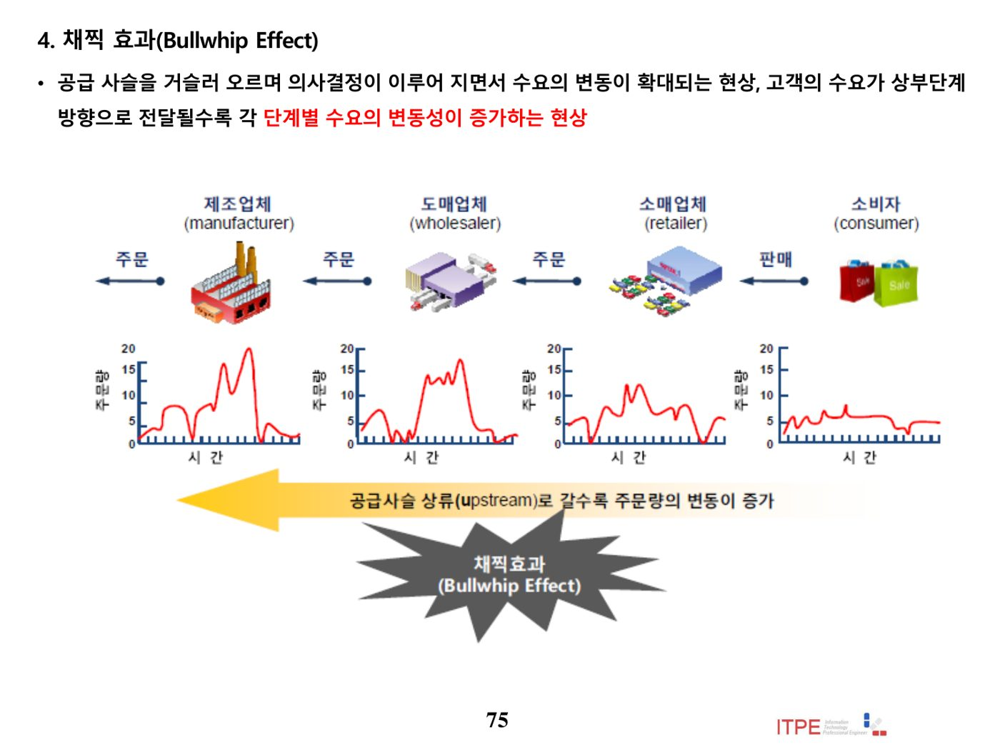
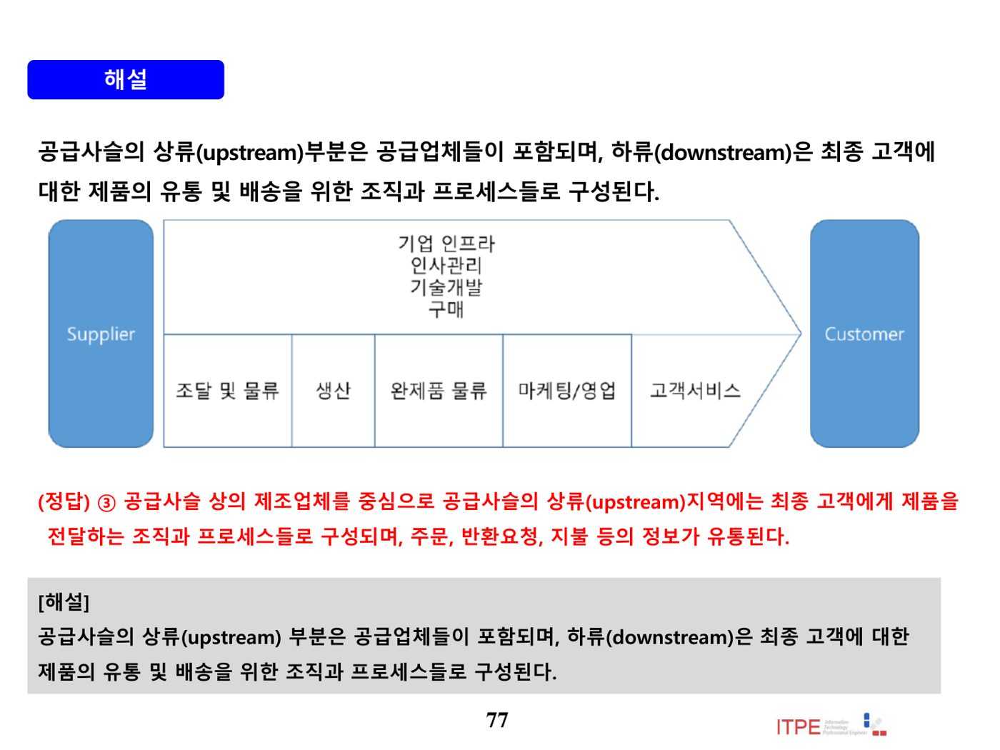
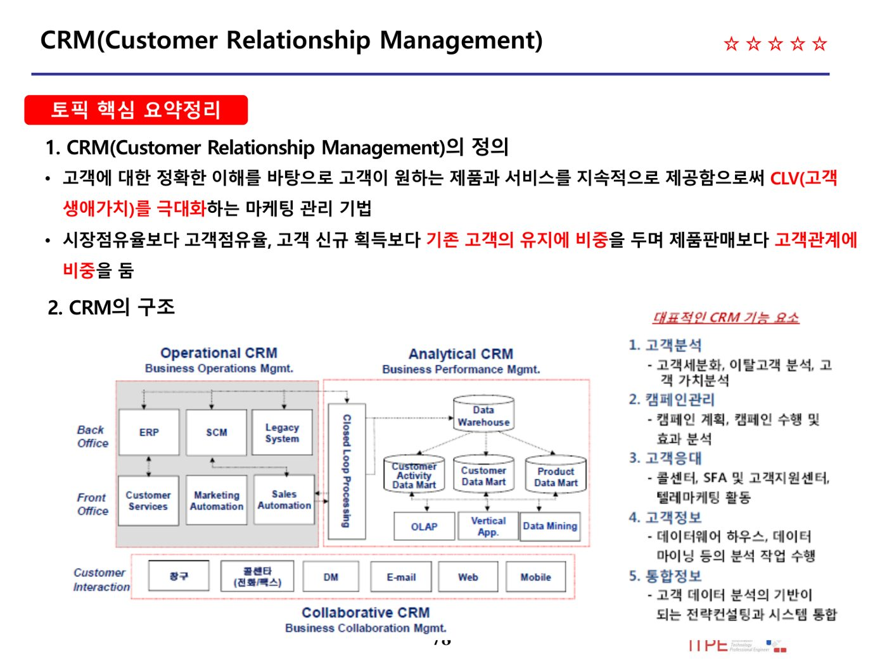
3. CRM 유형 (원본 p.79)
▸ 원본 p.79 표: CRM 유형
| 구분 | 내용 | 시스템 |
|---|---|---|
| 운영CRM (Operational CRM) | • 고객접점에서 고객관리 지원 • 영업, 마케팅, 고객서비스를 연계한 업무지원, 비즈니스 프로세스 통합화 및 자동화 | • 마케팅 정보관리 • 캠페인 시스템 • Sales Force Automation |
| 분석CRM (Analytical CRM) | • 운영에서 발생하는 데이터로 마케팅 분석, 판매분석 지원 • DW와 연계하여 분석 정보 제공 | • 전사적 DW, OLAP 구축 • Data Mining |
| 협업CRM (Collaborative CRM) | • 고객과의 접촉 채널 지원 • 고객과 기업, 기업 내의 조직간 업무 일원화, 협업을 목적으로 상호연관서비스 지원 | • Call Center • Mobile Service • e-CRM, g-CRM |
ERP(Enterprise Resource Planning) (원본 p.80)
ERP(Enterprise Resource Planning)의 정의
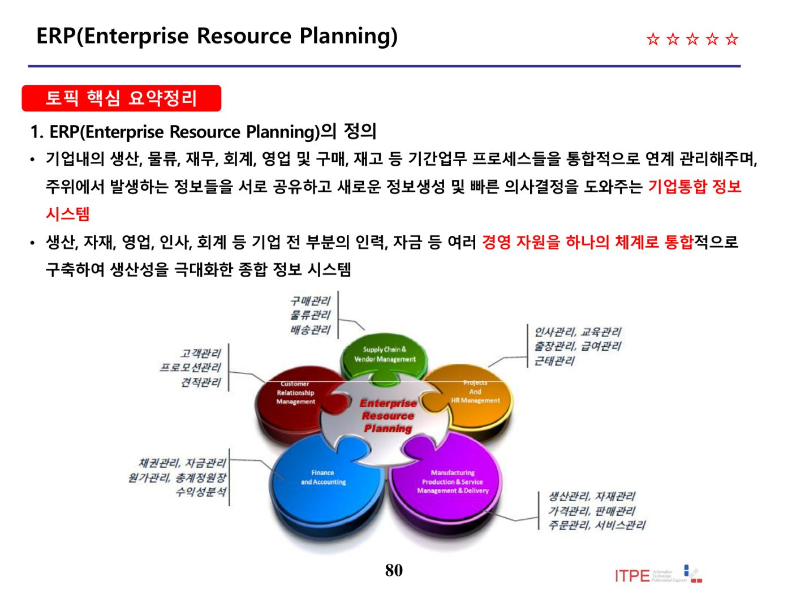
2. ERP의 구조 (원본 p.81)
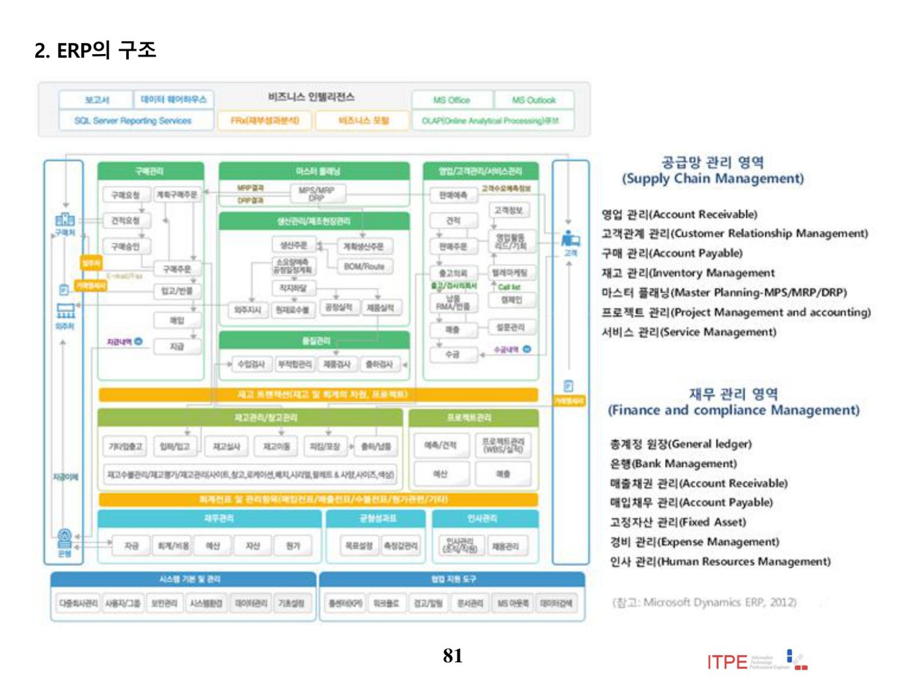
가치 사슬(Value Chain) (원본 p.82)
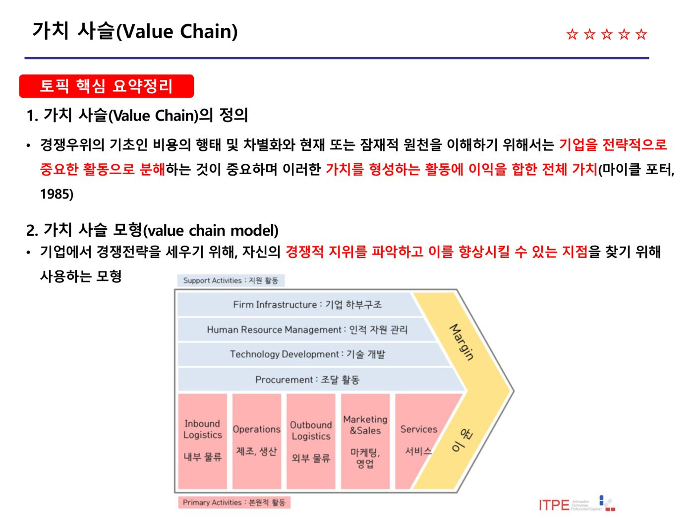
BPM(Business Process Management) (원본 p.83)
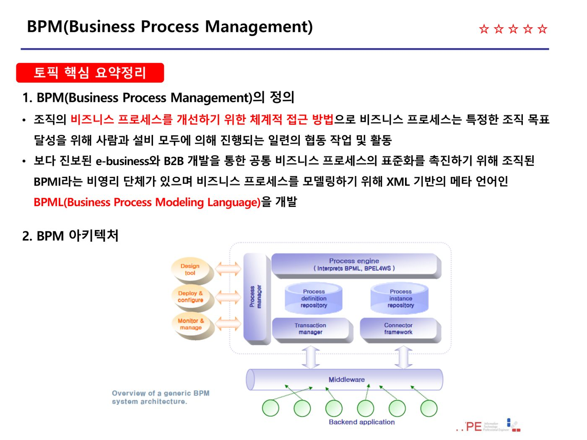
3. BPM 기술영역 (원본 p.84)
▸ 원본 p.84 표: BPM 기술영역
| 구분 | 내용 | |
|---|---|---|
| 프로세스 관점 | 프로세스 모델링 | • 비즈니스 프로세스 내의 정보와 문서의 호출에 대한 그래픽적인 시각 창출 도구 |
| BPA | • Business Process Analysis • 전체 비즈니스 프로세스 설계 • 현 비즈니스 활동을 선별, 기업의 핵심 목표와 연계 • 핵심 경로 상의 병목 구간 파악 | |
| BRE | • Business Rule Engine • 흐름 통제 영역 관점 • 최적의 비즈니스, 프로세스 흐름을 지원, 실행 및 유지 | |
| BAM | • Business Activity Monitoring • 비즈니스 이벤트 이력 분석 • 비즈니스 활동들의 정확성, 효율성, 품질 및 안정성 추적 | |
| 통합관점 | EAI | • 내부 어플리케이션 인터페이스를 위한 이벤트 중심의 통합 |
| WorkFlow | • 인간 중심의 비즈니스 프로세스 흐름 처리 |
Data Warehouse(DW) (원본 p.85)
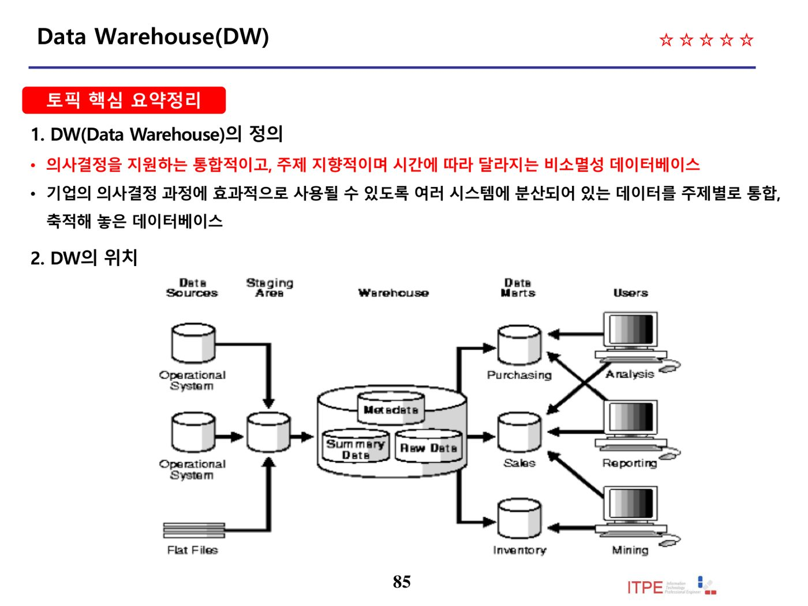
3. DW의 특징 (원본 p.86)
▸ 원본 p.86 표: DW의 특징
| 구분 | 내용 |
|---|---|
| 주제 중심적 | • 전사 공통 관심 주제를 중심으로 관련 데이터 통합 |
| 통합적 | • 데이터의 정합과 물리적 통일성을 갖는 데이터 구조 • 데이터 모델링을 통해 데이터 정합성 보장 • 운영계로부터 데이터 획득시 데이터 통합을 위한 일련의 변환 작업 수행 |
| 시계열적 | • 데이터는 오랜기간 보유되며, 과거와 현재의 경향에 대한 분석 예측에 무엇을 해야 하는지 가능하게 일련의 스냅샷 처럼 저장함 |
| 비휘발성 | • 데이터 갱신은 일반적으로 일어나지 않음 • 데이터 적재와 데이터 액세스만 존재 • 데이터 갱신 이상 발생 안됨, 반정규화 가능 |
1. 디자인 패턴의 정의 (원본 p.87)
▸ 원본 p.87 표: 디자인 패턴(Design Pattern)
| Creational Pattern(생성패턴) | Structural Pattern(구조패턴) | Behavioral Pattern(행위패턴) | ||
|---|---|---|---|---|
| 의미 | • 객체의 생성방식을 결정하는 패턴 | • Object를 조직화하는데 유용한 패턴 | • Object의 행위를 Organize, Manage, Combine하는데 사용되는 패턴 | |
| 범위 | 클래스 | Factory Method | Adapter(Class) | Interpreter, Template Method |
| 객체 | Abstract Factory, Builder, Prototype, Singleton | Adaptor(Object), Bridge, Composite, Decorator, Façade, Flyweight, Proxy | Command, Iterator, Mediator, Memento, Observer, State, Strategy, Visitor |
1. 가상화(Virtualization)의 정의 (원본 p.88-89)
가상화의 특징
▸ 원본 p.88: 가상화(Virtualization)
1. 가상화(Virtualization)의 정의
2. 가상화의 특징
- 물리적으로 다른 시스템을 논리적으로 통합하거나 하나의 시스템을 논리적으로 분할해 자원을 효율적으로 사용하게 하는 기술
- 사용자에게 리소스의 물리적 속성이나 영역이 감춰진 채 제공되는 리소스의 모음 구분 내용 isolation
- 하나의 리소스 상 복수의 소프트웨어를 독립적으로 가동 decoupling
- 리소스와 그 위의 소프트웨어 간의 의존성(dependency)를 최소화하여 소프트웨어의 portability와 mobility를 가능하게 함 consolidation
- 복수의 유사기능 하드웨어를 하나로 통합하게 해주는 특징
- 가상화 기술은 서버, 스토리지, 네트워크 등 하드웨어 기반 뿐 아니라 소프트웨어 영역까지 확대
- 서버 중심으로 적용되던 가상화 기술이 사용자 컴퓨팅 환경으로 확대되어 데스크탑 가상화 영역으로 진화
▸ 원본 p.89 표: 구분
| 구분 | 유형 | 가상화 기술 |
|---|---|---|
| 인프라 자원 | 서버 가상화 | • 파티셔닝, 가상I/O, 하이퍼바이저 |
| 스토리지 가상화 | • 블록 가상화, 가상 테이프 라이브러리 | |
| 네트워크 가상화 | • L2~L7 활용, VPN, VLAN | |
| 정보 | 파일 가상화 | • 클러스터 파일, 그리드 파일 시스템 |
| 데이터 가상화 | • 데이터 연합 및 콘솔리데이션 | |
| 워크로드 | 트랜잭션 가상화 | • JVM 로드 밸런싱 |
| 태스크 가상화 | • 컴퓨팅 그리드 | |
| 프리젠테이션 가상화 | • 서버 기반 컴퓨팅(SBC) | |
| 운영환경 | 전사적 워크로드 | • Enterprise Workload Manager |
| 전력/냉각 효율화 | • Hybernation, Partition Mobility | |
| 유틸리티 서비스 | • Metering, Provisioing | |
| 백업 가상화 | • VTL 백업, 테이프 라이브러리 기반 백업 | |
| 클라이언트 데스크탑 가상화 | • PC 가상화, 서버기반 컴퓨팅(SBC), VDI(Virtual Desktop Infrastructure) |
3. 명령어 전달에 따른 가상화 구분 (원본 p.90-104)
▸ 원본 p.90 표: 명령어 전달에 따른 가상화 구분
| 구분 | 내용 |
|---|---|
| 전가상화 (Full- Virtualization) | • 하드웨어를 완전히 가상화하는 방식 • 하드웨어를 완전히 가상화하기 때문에 게스트 OS 수정 없이 다양한 OS 이용 장점 • 전가상화 실현을 위해 물리적인 가상화 지원 기능, 즉 CPU의 VT(Virtualization Technology)를 이용, 이에 따라 성능 저하가 발생한다는 단점은 있음 |
| 반가상화 (Para- Virtualizaton) | • 전가상화와 달리 하드웨어를 완전히 가상화하지 않음 • 게스트 OS가 직접 하드웨어를 제어하는 것이 아니라, 하이퍼바이저에게 의뢰, 하이퍼바이저 제어를 통해 높은 성능 유지 가능 • 게스트 OS의 커널 일부를 수정해야 한다는 단점은 있음 |
| 구분 | 내용 |
|---|---|
| 전가상화 (Full- Virtualization) | • 게스트(guest) OS들과 네이티브 하드웨어 사이를 중재(mediate)하는 가상 머신을 사용(emulation) • Guest OS와 H/W 사이에 VM을 거쳐 전달하므로 성능은 떨어지지만 Guest OS 수정 없이 바로 사용 가능 |
| 반가상화 (Para- Virtualizaton) | • 특권모드 명령어를 hypercall로 변환하여 실행 • Guest OS의 명령을 중간 단계 없이 바로 H/W에 전달하므로 성능은 향상되지만, Guest OS의 커널 수정이 필요(윈도우 처럼 소스 코드가 오픈되지 않은 상용 OS는 적용 불가 |
| 구분 | 내용 |
|---|---|
| 물리적 파티셔닝 (Physical Partitioning) | • 하드웨어 자원들이 물리적으로 파티션이라는 하위 자원 단위로 분할되어 사용됨 • 각 파티션은 최소 1개 이상의 CPU 프로세서를 가지며, 각 파티션은 물리적으로 완전 격리된 형태로 구성되어 독립성이 높으나, 그로 인해 유연하지 못하고 전체 시스템을 재부팅하기 전까지 변경되지 못함 |
| 논리적 파티셔닝 (Logical Partitioning) | • 논리적 파티션은 별도의 모체가 되는 OS 없이 하이퍼바이저라는 펌웨어 수준에서 하나 또는 그 이상의 OS 이미지들이 하나의 물리적 서버 위에서 동작함 • 각 논리적 파티션은 고정 혹은 가변적인 개수의 프로세스를 가질 수 있음 • 하나의 서버가 다수의 논리적 파티션으로 분할 될 수 있게 해주며, 서버가 단 1개의 프로세서로 이루어진 경우에도 파티션 가능 • 논리적 파티션들의 사용율을 실시간으로 파악하여 CPU 및 메모리 자원을 실시간으로 자동 분배해 줌으로써 시스템 효율성 및 유연성이 높음 |
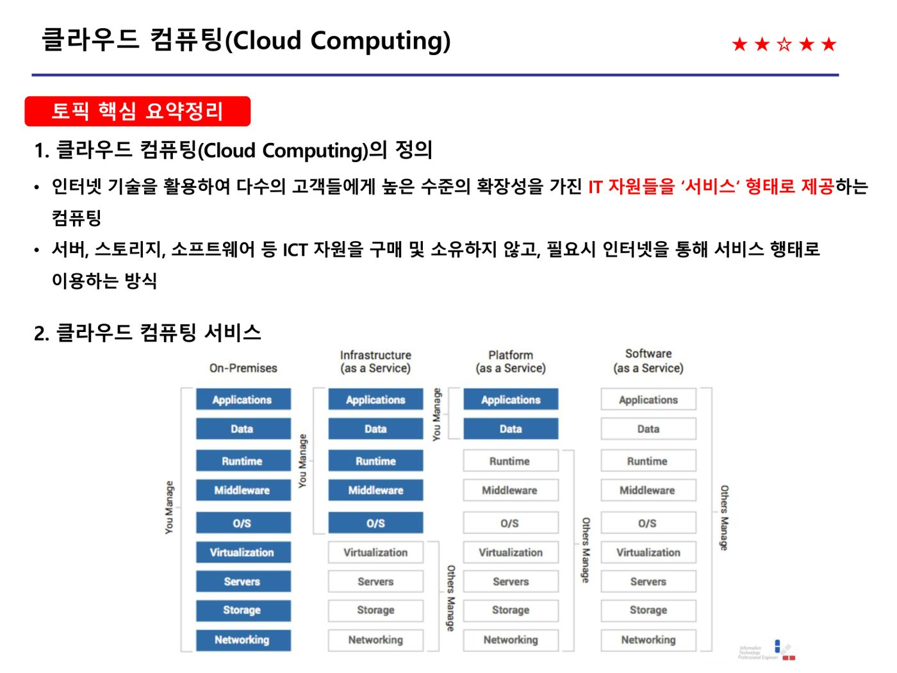
▸ 원본 p.96 표: 구분
| 구분 | 내용 |
|---|---|
| SaaS (Software as a Service) | • 사업자가 인터넷을 통해 소프트웨어를 제공하고, 사용자가 인터넷 상에서 원격 접속해 해당 소프트웨어를 활용하는 모델 • 하나의 플랫폼을 통해 다수의 고객에게 SW를 제공하고 사용한 만큼 비용 지불 |
| PaaS (Platform as a Service) | • 사용자가 소프트웨어를 개발할 수 있는 환경을 제공해주는 서비스 • 개발자들은 플랫폼 상에서 제공되는 자원을 활용하여 새로운 어플리케이션 제작이 가능 |
| IaaS (Infrastructure as a Service) | • 서버 인프라를 서비스로 제공하는 것으로 저장장치(storage) 또는 컴퓨팅 능력(compute)을 인터넷을 통해 제공 • 서버 또는 스토리지를 사용자에게 서비스 형태로 제공 |
| 가상화 (Virtualization) | • 컴퓨터 리소스의 추상화를 일컫는 광범위한 용어로 물리적으로 분산된 시스템을 논리적으로 통합하거나, 하나의 시스템을 논리적으로 분할하여 어플리케이션 서버, 스토리지, 네트워크 등의 자원을 효율적으로 사용하는 기술 |
▸ 원본 p.97 표: 항목
| 항목 | 지표 | 측정단위 | 측정방법 |
|---|---|---|---|
| 시스템 성능 | CPU | • 단위 : MIPS(Million Instruction Per Second) • CPU가 수행한 인스트럭션(연산) 수 | • 압축과 해제 시 MIPS값의 평균 • ((압축 MIPS) + (해제 MIPS))/2 |
| 메모리 | • 단위 : MB/s(Mega Byte/second) • 메모리 처리 속도 | • 정수, 부동소수 연산 등의 평균 측정 | |
| 디스크 | • 단위 : KB/s(Kilo Byte/second) • 디스크 I/O 처리속도 | • 디스크 입출력 명령어 처리속도 평균 | |
| 네트워 크 성능 | TCP 대역폭 | • 단위 : Kbps • TCP 패킷 전송 속도 | • 60초간 TCP 패킷 전송 평균 속도 측정 |
| TCP 지연시간 | • 단위 : ms • TCP 패킷 전송 지연시간 | • ICMP 패킷 전송 지연시간 측정 | |
| UDP 지연시간 | • 단위 : ms • UDP 패킷 도착간격 분산(variance) | • UDP 패킷 도착 간격 분산(variance) 측정 | |
| 손실율 | • 단위 : % • UDP 패킷 손실율 | • UDP 패킷 미 도착 횟수 측정 |
| 구분 | 내용 |
|---|---|
| SaaS (Software as a Service) | • 사업자가 인터넷을 통해 소프트웨어를 제공하고, 사용자가 인터넷 상에서 원격 접속해 해당 소프트웨어를 활용하는 모델 • 하나의 플랫폼을 통해 다수의 고객에게 SW를 제공하고 사용한 만큼 비용 지불 |
| PaaS (Platform as a Service) | • 사용자가 소프트웨어를 개발할 수 있는 환경을 제공해주는 서비스 • 개발자들은 플랫폼 상에서 제공되는 자원을 활용하여 새로운 어플리케이션 제작이 가능 |
| IaaS (Infrastructure as a Service) | • 서버 인프라를 서비스로 제공하는 것으로 저장장치(storage) 또는 컴퓨팅 능력(compute)을 인터넷을 통해 제공 • 서버 또는 스토리지를 사용자에게 서비스 형태로 제공 |
| 가상화 (Virtualization) | • 컴퓨터 리소스의 추상화를 일컫는 광범위한 용어로 물리적으로 분산된 시스템을 논리적으로 통합하거나, 하나의 시스템을 논리적으로 분할하여 어플리케이션 서버, 스토리지, 네트워크 등의 자원을 효율적으로 사용하는 기술 |
| 구분 | 내용 |
|---|---|
| 분리 OS 구조 | • 테넌트 들은 운영체제 수준에서 분리되어 소프트웨어 서비스 제공 • 보안은 우수하나 리소스 소모가 과도하여 비용 소모가 큼. 초기 ASP 사용 구조 |
| 공유 OS-분리 VM 구조 | • 테넌트 들은 가상머신(VM) 수준에서 분리되어 소프트웨어 서비스 제공 • VM이 분리되어 보안이 우수하나, 사용자 마다 VM 실행 |
| 공유 VM-분리 응용코드 구조 | • 테넌트 들은 가상머신(VM)이 공유되며, 응용코드는 분리되는 형태 • VM에서 제공하는 기능에 의해 보안이 이루어짐 • 동일 VM 사용자간 보안이 취약할 수 있음 |
| 공유 응용코드-분리 인스턴스 구조 | • 가상머신(VM)과 공용 응용프로그램 코드까지 공유, 응용 인스턴스만 분리 • 공용 프로그램 코드에 포함된 보안 모듈에 의해 보안이 이루어지므로 보안 취약 가능 |
| 공유 응용 인스턴스 구조 | • 테넌트 들간에 응용 인스턴스까지 모두 공유되는 형태 • 인스턴스까지 공유로 보안 취약 가능성 가장 높음. 리소스/비용소모 가장 적음 |
| 구분 | 지표 | 측정단위 |
|---|---|---|
| 시스템 성능 | CPU | • MIPS(Million Instruction Per Second) • CPU가 수행한 인스트럭션(연산) 수 |
| 메모리 | • MB/s(Mega Byte/second) • 메모리 처리 속도 | |
| 디스크 | • KB/s(Kilo Byte/second) • 디스크 I/O 처리속도 | |
| 네트워크 성능 | TCP 대역폭 | • Kbps, TCP 패킷 전송 속도 |
| TCP 지연시간 | • ms, TCP 패킷 전송 지연시간 | |
| UDP 지연시간 | • ms, UDP 패킷 동작간격 편차 | |
| 손실율 | • %, UDP 패킷 손실융 |
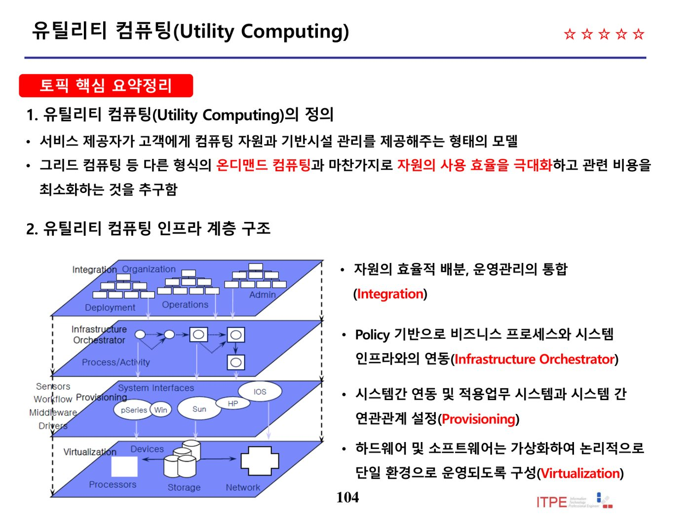
1. 군집분석(Cluster Analytics)의 정의 (원본 p.105)
▸ 원본 p.105 표: 군집분석(Cluster Analytics)
| 분류 | 구분 | 내용 |
|---|---|---|
| 계층적 군집 (hierarchical clustering) | 개념 | • 각각의 군집들이 가까운 군집 간 계속적인 결함이 이루어지며, 이 과정에서 계속적으로 군집의 수가 감소 |
| 한계 | • 한 대상이 일단 어느 군집에 소속되면 다른 군집으로 이동될 수 없음 • 이상 개체(outlier)는 제거되지 않고 반드시 어느 군집에 속함 | |
| 비계층적 군집 (non- hierarchical clustering) | 개념 | • 군집을 차례로 결합하는 방식이 아니라 최초에 정해진 군집의 수에 맞춰서 대상들이 군집들에 할당 |
| 한계 | • 사전에 군집(그룹) 수에 대한 예상 필요 • 개체 분류는 처음 선정한 seed 점들에 영향을 많이 받아 분석에 따라 분류가 다를 가능성 있음(군집의 수와 seed 값의 위치의 결합 조건이 너무 많아 분류를 위한 계산이 용이하지 않음) |
3. 군집분석 유형 (원본 p.106-108)
▸ 원본 p.106 표: 군집분석 유형
| 구분 | 분석방법 | 내용 |
|---|---|---|
| 계층적 | Ward 연결방식 | • 각 군집에 속하는 구성원들 사이의 거리 중 최단거리(편차의 제곱)을 통해 유사성이 큰 군집을 결합하는 방법 |
| 최단연결방식 (Single linkage) | • 각 군집에 속하는 임의의 구성원들 사이의 거리 중 최단거리를 통해 유사성이 큰 군집을 결합하는 방법 | |
| 최장연결법 (Complete linkage) | • 각 군집에 속하는 임의의 구성원들 사이의 거리 중 최장거리를 통해 유사성이 큰 군집을 결합하는 방법 | |
| 평균연결방식 (Average linkage) | • 각 군집에 속하는 모든 구성원들의 평균거리를 통해 유사성이 큰 군집을 결합하는 방법 | |
| 비계층적 | K-평균(Means) 방법 | • 사전에 결정된 K개의 선정값(중심값)을 중심으로 K개의 군집이 형성될 때까지 지속적으로 군집화. 군집화 과정에서 중심값은 변경됨 |
| 구분 | 분석방법 | 내용 |
|---|---|---|
| 계층적 | Ward 연결방식 | • 각 군집에 속하는 구성원들 사이의 거리 중 최단거리(편차의 제곱)을 통해 유사성이 큰 군집을 결합하는 방법 |
| 최단연결방식 (Single linkage) | • 각 군집에 속하는 임의의 구성원들 사이의 거리 중 최단거리를 통해 유사성이 큰 군집을 결합하는 방법 | |
| 최장연결법 (Complete linkage) | • 각 군집에 속하는 임의의 구성원들 사이의 거리 중 최장거리를 통해 유사성이 큰 군집을 결합하는 방법 | |
| 평균연결방식 (Average linkage) | • 각 군집에 속하는 모든 구성원들의 평균거리를 통해 유사성이 큰 군집을 결합하는 방법 | |
| 비계층적 | K-평균(Means) 방법 | • 사전에 결정된 K개의 선정값(중심값)을 중심으로 K개의 군집이 형성될 때까지 지속적으로 군집화. 군집화 과정에서 중심값은 변경됨 |
1. 하둡(Hadoop)의 정의 (원본 p.109-118)
하둡 에코 시스템 1.0
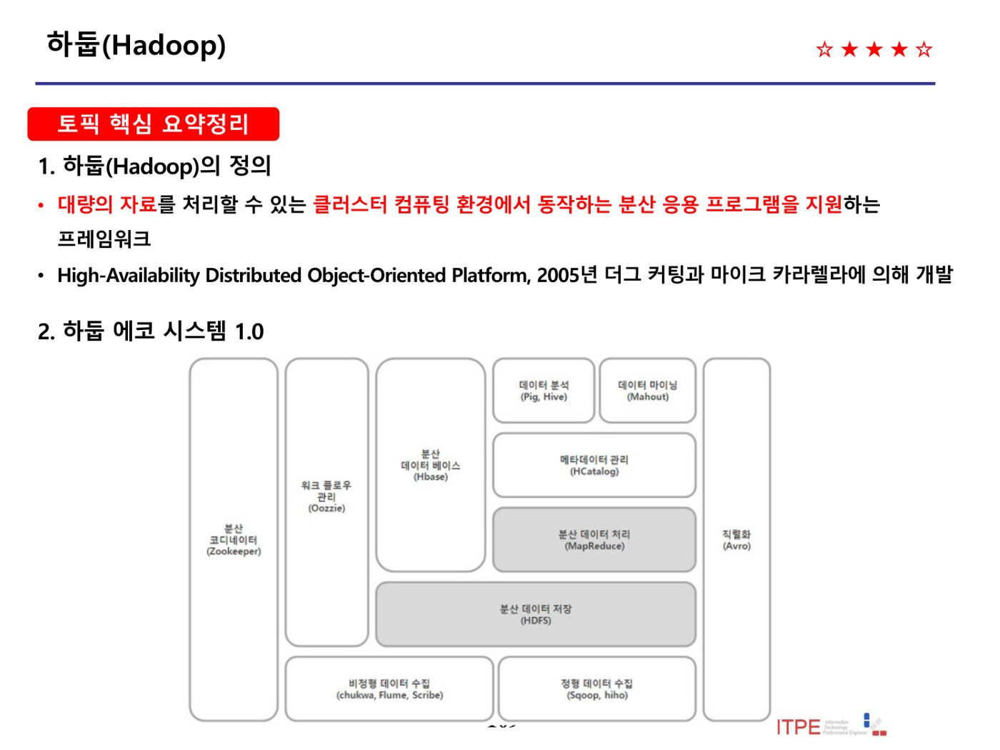
▸ 원본 p.110 표: 구분
| 구분 | 주요기술 | 주요기능 |
|---|---|---|
| 빅데이터 수집 | • Flume • Sqoop | • 비정형 데이터 수집 • 관계형 DB로부터 데이터 가져오기 |
| 빅데이터 저장, 활용 | • Hbase | • 컬럼 기반 NoSQL 데이터베이스 |
| 빅데이터 처리 | • Hive • Pig • Mahout | • 유사 SQL 기반 빅데이터 처리 • 스트립트 언어 기반 빅데이터 처리 • 기계학습 알고리즘 기반 빅데이터 처리 |
| 빅데이터 관리 | • Oozie • Hcatalog • Zookeeper | • 빅데이터 처리 과정(Process) 관리 • 빅데이터의 메타 정보 관리 • 빅데이터 서버 시스템 관리 |
| 구분 | 내용 |
|---|---|
| Consistency(일관성) | • 모든 사용자는 같은 데이터의 뷰를 가짐 |
| Availability(가용성) | • 모든 사용자는 항상 데이터 사용이 가능 |
| Partition Tolerance(파티션 허용) | • 분산된 특정 노드에 장애가 발생해도 데이터 사용이 가능 |
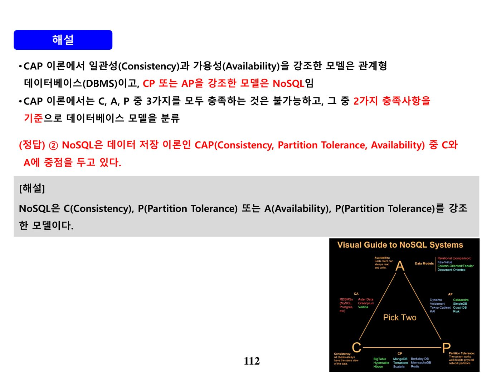
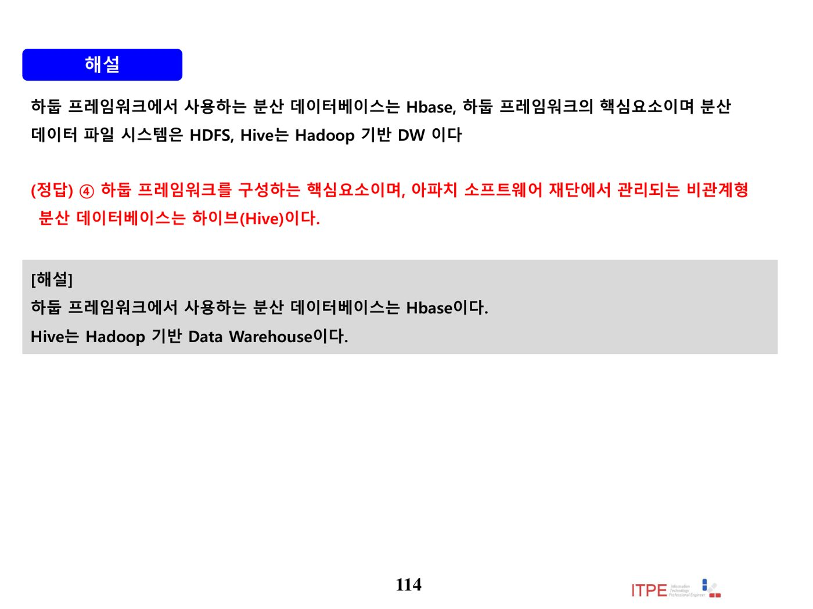
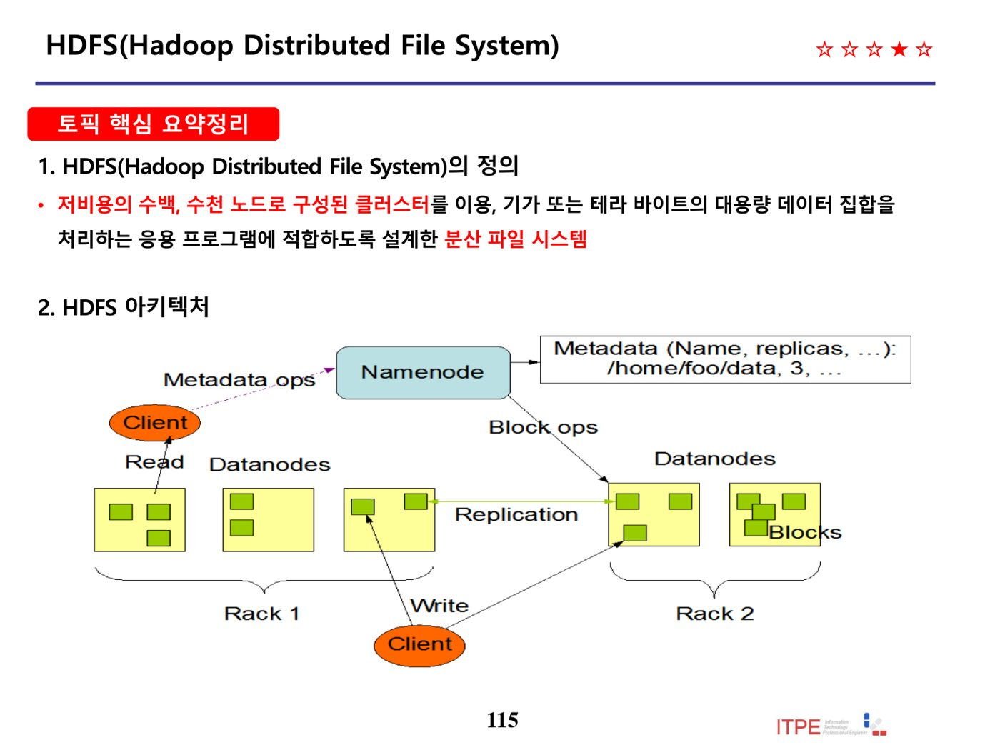
▸ 원본 p.116 표: 구성요소
| 구성요소 | 내용 |
|---|---|
| NameNode | • 파일시스템의 Metadata(디렉터리구조, Access 권한 등) 관리 서버 • 블록에 대한 배치정보를 관리, 특정 파일이 어떻게 블록으로 분할되어 어느 Data Node에 보관 유지되고 있는지를 관리 |
| DataNode | • 실제 데이터를 저장 유지하는 서버, Data Node 간에는 데이터 복제를 통해 데이터의 신뢰성을 유지함 |
| Secondary NameNode | • NameNode의 Metadata 로드가 실패시 Backup Node로 사용 • NameNode에서 Secondary Name Node로 지속시 copy |
| Replication | • Datanode 간 정보 복제 • 성능향상 및 장애시 지속적 서비스 제공 |
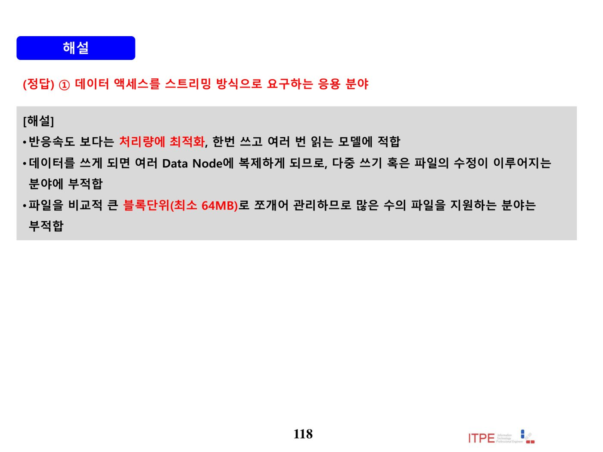
📚 기출·예상문제 (14문항) — 원문 수록
본 편(정보시스템 아키텍처·미들웨어·클라우드)에 해당하는 원본 페이지 범위의 기출·예상문제를 정리했습니다. 정답·해설은 강의 원문 기준입니다.
• 자바 엔터프라이즈 애플리케이션(Java Enterprise Application) 개발에 사용되는 프레임워크이다. • 자바 객체가 생성되고 동작하는 방식에 대한 툴을 제공하고 애플리케이션 코드를 어떻게 작성하는지 에 대한 설계 원칙과 기준도 제시한다. • IoC(Inversion of Control)/DI(Dependency Injection)로 불리는 객체의 생명주기와 의존관계에 대 한 프로그래밍 모델을 지원한다. • 대한민국 전자정부 표준 프레임워크로 선정되어 활용하고 있다. (원본 p.30)
JDK 1.4부터 지원하는 ( )는 Minor GC를 동시에 다수의 스레드(thread)를 이용해서 GC를 수행하는 방 식으로 하나의 스레드를 이용하는 것보다 훨씬 빨리 GC를 수행할 수 있다. ( )는 크게 2가지 옵션을 가지 고 있는데 Low-pause방식과 Throughput 방식이 있다. (원본 p.61)